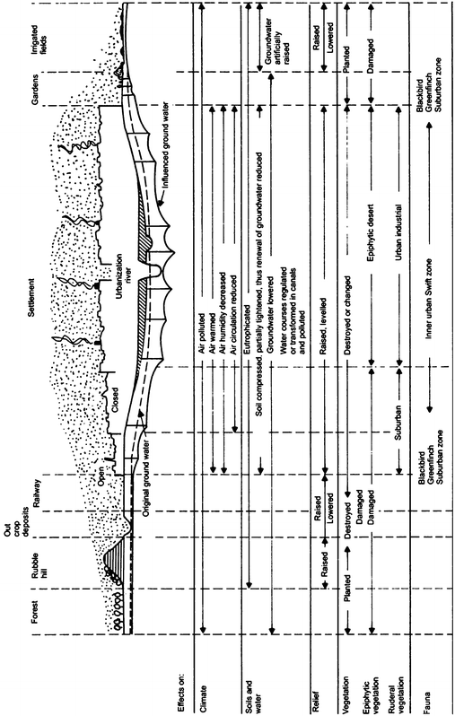
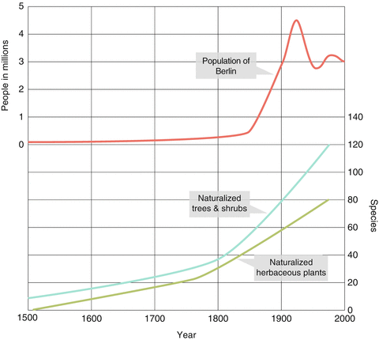
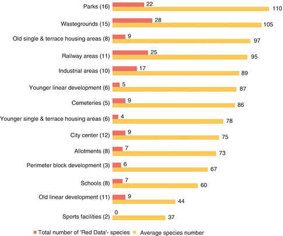
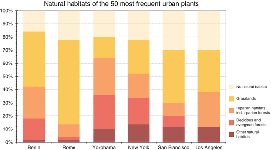
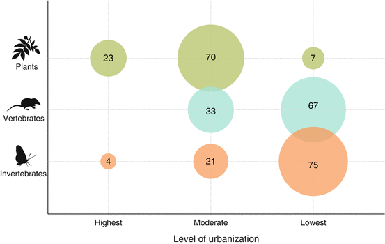
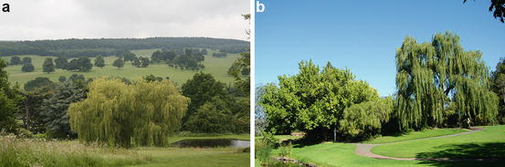
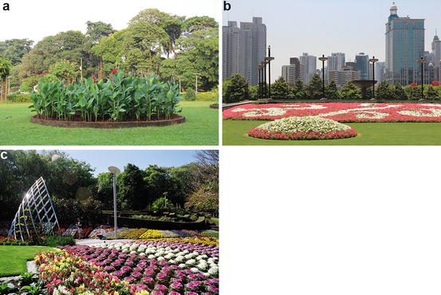
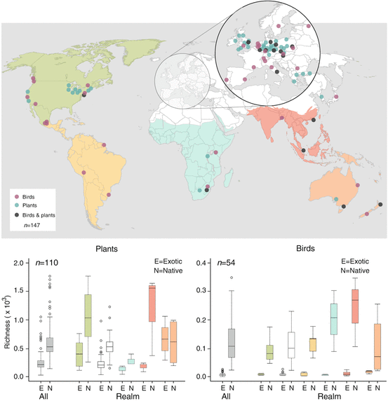

10.1 Introduction
Urbanization is a double-edged sword. On one edge, urbanization destroys and fragments natural ecosystems, introduces non-native species, degrades and alters ecosystem processes, and modifies natural disturbance regimes. On the other edge, urbanization creates social and economic opportunities, centers of art and culture, and truly unique ecological spaces through design. Cities are not landscapes depauperate of plants and animals, but rather novel places teaming with unique plant and animal communities. In fact, cities can play an essential role in meeting the Convention on Biological Diversity (CBD) target of stemming biodiversity losses. This role includes three complementary components: (1) sustaining ecosystem goods and services for and within cities; (2) conserving biodiversity within towns and cities and promoting the sustainable design of all urban areas to maximize their ability to support biodiversity; and (3) promoting awareness and influencing decision-making to create livable spaces not only for humans, but also plants and animals.
This chapter will examine how urbanization affects biodiversity at local and regional scales, how novel biotic communities and habitats are created, how social contexts influence species patterns and richness, and how landscape-design is influencing biodiversity in cities. The chapter also examines the role of non-native species in urban landscapes and how species are evolving in cities. The term “urban landscapes” is used in this chapter to capture the diversity of human communities ranging from small settlements such as villages or towns whose populations are less than ten thousands to megacities whose populations are greater than ten million humans.
10.2 Biodiversity Patterns
An important component of evaluating biodiversity in urban landscapes is defining biodiversity (Box 10.1). For this chapter, the distribution of species and species richness across the urban landscape is used as one measure of diversity. To assess species richness, it is also necessary to define what a native and non-native species is and examine the types of sampling protocols to measure richness.
The term ‘non-native species’, used throughout this chapter, is the equivalent of ‘alien species’ as used by the CBD. It refers to a species, subspecies or lower taxon, introduced (i.e., by human action) outside its past or present natural distribution and includes any part—gametes, seeds, eggs, or propagules—of such species that might colonize, grow and mature and subsequently reproduce. The chapter does not address genetically modified organisms (GMOs) or non-native fungi, bacteria, and viruses.
To measure biodiversity in an urban landscape, one must account for the relative age and area of the urban landscape as well as inventorying methodology. In general, older urban landscapes have more non-native species than recently settled landscapes (Pyšek and Jarošík 2005). Furthermore, larger urban landscapes (e.g., cities) have more non-native species than small urban landscapes (e.g., villages and towns) (Pyšek et al. 2004). Within a given city, different sampling designs may have been applied at different times, yielding different species richness values, and thereby limiting comparability. In conjunction with sampling protocol, the area being sampled and the intensity of sampling needs to be considered. City boundaries, landscape heterogeneity, and ownership patterns change over time and these changes can affect not only areas being inventoried but also species distribution. For example, biodiversity studies in urban areas are often conducted on public spaces where access is not limited. Yet, often more than 70 % of the land in urban areas is privately owned. Because private landowners control the vegetation structure on their properties, these properties can influence urban biodiversity tremendously (van Heezik et al. 2012). Their absence from sampling can affect the overall recorded species for an area. Likewise, an important element of sampling is what constitutes a count—a single individual of a species or a viable population?
Although different protocols can be used to describe and quantify the effect of urbanization on biodiversity, the two primary techniques are the urban-rural gradient and comparisons among land uses. Urban-rural gradients represent anthropogenic gradients that result from patterns of human development. Based upon techniques used by plant ecologists to study the influence of an environmental gradient on community composition, Sukopp and Werner (1982) and McDonnell and Pickett (1990) propose using the gradient approach to capture changes in land use, the bio-physical environment, and alternation of disturbance as one moves from the urban core to the rural fringe. Sukopp (1973) and Sukopp et al. (1980) illustrate these changes for a typical city in the northern hemisphere (Fig. 10.1) (Box 10.2). These gradients, however, may not be linear (e.g., high to low) as one moves from the urban to the rural landscape but rather are dependent on the organizational structure of the city—concentric, sector, or multiple nuclei (Harris and Ullman 1945). Quantifying the spatial and temporal scales of urban components (i.e., what is urban) along the gradient is paramount for comparability (McIntyre et al. 2000).
The gradient approach can also be applied within a city by comparing different land uses. Blair (1996) uses this urban gradient approach to study how avian diversity varied by land use. Land use is used to capture urban morphology and generally includes residential, agricultural, transportation, industrial, commercial, recreational, institutional, and ‘natural’ cover such as forest (see Anderson et al. (1976) for a detailed description and definitions of land usage). Scientists often treat land-use as a homogenous area with respect to environmental and anthropogenic factors, but heterogeneity within a land use often exists because of different building types and social contexts (Kinzig et al. 2005). These differences can influence the presence and distribution of species. Like defining an urban-rural gradient, how the various land uses are defined and the scale of at which measurements are taken are critical for comparing species patterns across different studies.
Despite the issues associated with definitions and sampling, general patterns of species richness are discernible. For instance, native species richness declines and non-species richness increases as one moves from the rural fringe to the urban core with approximately 30–50 % of the plant species in the urban core being non-native (Dunn and Heneghan 2011). Similarly, under some conditions of low to moderate levels of urban development (i.e., suburbanization), species richness may actually increase (McKinney 2002). The increased number of species in suburbanizing landscapes results from high habitat heterogeneity, high number of introduced species, socio-economic factors, and altered disturbance regimes (see Kowarik 2011). Another species pattern observed in urban landscapes is that species tend to be non-native invasives and native generalists, which are tolerant to the urban conditions. The literature, however, provides studies that are contrary to these generalities. For example, Hope et al. (2003) report that species richness in Phoenix, Arizona, a city in the desert, increases with urbanization because of human influences such as irrigation and ornamental landscaping. In a review of gradient studies, McDonnell and Hahs (2008) actually identify five response curves for native species as urbanization increases: (1) no response, (2) negative response, (3) punctuated response, (4) an intermediate response, and (5) a bimodal response. Although not stated by McDonnell and Hahs (2008), a native species may also show a positive response to urbanization (see Sect. 10.4.1). To examine more closely how urbanization affects species richness, a detailed discussion of plants and birds and—to a less detailed degree—mammals, amphibians reptiles, and invertebrates is provided in the subsequent sections.

Fig. 10.1
Variations in biotic and abiotic components of a city’s biosphere in the northern hemisphere (Reproduced from Sukopp et al. 1980. Published with kind permission of © Herbert Sukopp 2013. All rights reserved)
Box 10.1 What Is Urban Biodiversity?
Urban biodiversity is ‘the variety or richness and abundance of living organisms (including genetic variation) and habitats found in and on the edge of human settlements’. Species range from the rural fringe to the urban core (see Chap. 1). The following examples of habitats found in human settlements:
- Remnant vegetation (e. g., remnant habitats of native plant communities, rock faces)
- Agricultural landscapes (e. g., meadows, arable land)
- Urban-industrial landscapes (e. g., wastelands and vacant lots, residential areas, industrial parks, railway areas, brown fields).
- Ornamental gardens and landscapes (e.g., formal parks and gardens, small gardens and green spaces)
Box 10.2 A Number of Attributes That Define an Urban Area and Can Subsequently Affect Biodiversity (From Müller and Werner (2010) After Sukopp and Wittig (1998) and Pickett et al. (2001)) (See Chap. 1 for a Definition of Urban)
1.
Configuration of buildings, technical infrastructure and open spaces where the extent of hard surface (including buildings, paving and other structures) covers an average of 30–50 % of the land surface in the urban fringe and suburban areas, and well in excess of 60 % in the core areas.
2.
Formation of an urban heat island effect in temperate and boreal zones with longer periods of plant growth, warmer summers and milder winters than the surrounding countryside.
3.
Modification of the soil-moisture regimes, tending to become drier in temperate zones, but with opposite effects in desert areas due to irrigation.
4.
High levels of nutrient input at both point source and broad-scale.
5.
High biomass production in parks, private and community gardens, and similar intensively cultivated or managed areas.
6.
Intentionally and unintentionally elevated food availability for animals both wild and domesticated.
7.
Soil contamination, air pollution, and water pollution; with particular impacts on soil organisms, lichens, and aquatic species.
8.
Disturbance such as trampling, construction (often with removal of all vegetation), mowing, radical soil change, light and sound pollution, and litter or illegal dumping.
9.
Fragmentation of forests, grasslands and waterways as well as existing green spaces.
10.
High proportion of introduced plant- and animal species.
11.
High proportion of habitat generalists and common plant and animal species.
10.3 Plant Species Richness in Cities
Humans have a long history of transporting plant species and affecting local biodiversity. Since the Neolithic period, 12,000 species have been introduced into Central Europe for ornamental and cultural purposes and approximately 10 % (1,100) of those plants have become naturalized (Lohmeyer and Sukopp 1992). The 10 % naturalization of non-native species appears to be a general rule for continental flora (Reichard and White 2001); however, the effect of naturalization may be more dramatic on islands. For instance, on New Zealand, Ignatieva et al. (2000) and Stewart et al. (2010) document only 48 native species of a total of 317 vascular plant species in Christchurch. Pyšek (1998) also reports that the area extent of the urban landscape affects flora diversity. Villages have greater proportion of native species, whereas cities have greater proportion of non-native species with respect to the total number. Similarly, Sukopp and Wurzel (2003) correlate the increase in the number of naturalized species (trees, shrubs and herbaceous plants) with city expansion of Berlin, Germany during the nineteenth and twentieth centuries (Fig. 10.2).

Fig. 10.2
Correlation between human population growth and naturalized exotic plants in Berlin (Modified from Sukopp and Wurzel 2003. Published with kind permission of © Urban Habitats 2003 and Herbert Sukopp 2013. All Rights Reserved)
The relationship between human population size and biodiversity is more complex. Luck (2007) reviews the relationship between human population density and biodiversity and reports a positive correlation between human population density and species richness (primarily plants and birds) because of the co-occurrence of human settlements and species-rich areas (see Sect. 10.7 and Chap. 3). Scale of the geographical areas plays an important role in analyses with positive correlations between human population density and species richness occurring for sampling areas greater than or equal to 2,500 km2. For sites less than 2,500 km2, the correlation is less apparent because of geographical biases, scale of sampling, and sampling protocols; all are factors identified in the previous sections. Geographically, most biodiversity studies are conducted in the Northern Hemisphere with a high proportion in the United States (29 %) (see Chap. 27 for a discussion of a similar trend exhibited for studies on urban governance for biodiversity, and see Chap. 33 for a general examination of this northern bias). With projected human population growth (Chap. 21), regional planning and landscape design become paramount if cities are to reduce threats to threatened and endangered species, protect existing conservation areas, and minimize habitat loss and degradation (Luck 2007). In fact, the large forests in many urban landscapes will become increasingly more important for biological conservation. Examples of these spectacular forests include the Tijuca Forest in Rio de Janeiro; the Bukit Timah Nature Reserve in Singapore; Riccarton Bush in Christchurch; the El Ávila National Park in Caracas; remnants of Australian bush land habitats in Perth, Sydney and Brisbane; natural forest remnants in New York, Stockholm, St. Petersburg and Moscow; the Ridge Forest in New Delhi; and rock faces and outcrops in Edinburgh.
Williams et al. (2009) identify four primary factors or “filters” influencing the distributions of plant species in urban landscapes. They include (1) habitat availability, (2) the spatial arrangement of habitats, (3) the pool of plant species, and (4) evolutionary pressures on populations. With the exception of spatial arrangement, these filters mirror the factors influencing vegetation dynamics as posited by Pickett et al. (1987)—site availability, species availability, and species performance. An aspect of habitat availability is site history, which encapsulates ownership legacy and use. This history can be extensive, especially for ancient cities (see Celesti-Grapow et al. 2006 and Chap. 2). Furthermore, these filters or factors work synergistically and simultaneously, rather than independently, and their effects will vary by species (Williams et al. 2009). The next subsections examine species availability, unique habitats, and species traits for plants in urban landscapes.
10.3.1 Species Availability
Williams et al. (2009) identified three sources of species in urban landscapes: (1) native species originating in the area itself, (2) native species occurring regionally, and (3) non-native species introduced by humans or naturalized in the region. Wittig (2004) recognizes a fourth source, anecophytes, which are species with European origins that have no natural habitats but have evolved to adapt to agricultural, urban, and industrial landscapes. All of these sources are ecologically and anthropogenically dynamic. Changes in any of them may affect species diversity in a city (Tait et al. 2005).
Analyses of long-term species records provide insights into how these sources change. Chocholoušková and Pyšek (2003) examined the vegetation of the city of Plzen, Czech Republic and its surrounding area for three periods of time: 1880–1910, the 1960s, and the 1990s. Over the 120 year period, 805 species were permanently present, 368 disappeared, and 238 were new additions. Total species richness of the city and surrounding area decreased from 1,173 recorded in 1880–1910, to 989 in the 1960s, then increased to 1,043 in the 1990s, a 17 % total change over time. Interestingly, species richness in the surrounding area declined from 1,112 to 745 species, whereas the city’s species richness increased from 478 to 773 species, primarily through the introduction of non-native species. Of the 1,459 total number of species inventoried, 13.6 % were archaeophytes (introduced before 1500), 15.4 % neophytes (introduced after 1500), and 71.0 % native species. Similarity coefficient (Jaccard) between the surrounding area and the city increased from 35 % for the period of 1880–1910 to 46 % in the 1990s. Woody species, both shrubs and trees, increased in the city over the study period. A closer examination of the woody vegetation showed that neophyte woody species increased from 2 to 8 to 33 species (Chocholoušková and Pyšek 2003).
At a finer scale, DeCandido et al. (2007) examined the history of species change for Central Park in New York, NY, USA. Central Park is 341.2 ha and was established in 1853. Based on nineteenth-century plant lists, herbarium specimens, and field surveys in 2006–2007, DeCandido et al. (2007) reported that during the late nineteenth and early twentieth centuries 356 species—255 (74 %) natives and 91 (26 %) non-native—were recorded. From the 2006–2007 survey, 362 species—145 (40 %) native and 217 (60 %) non-native—were recorded. A cumulative list of total species from all sampling periods was 583 species—331 (57 %) native and 252 (43 %) non-native. Over the study period, 260 new species (64 % non-native) were added and 198 species (90 % native) were lost. Of the lost native species, 117 were annuals associated with wet meadows and woods; these are habitats-types that were lost during park development.
Other authors have reported similar patterns of shifts in species richness with turn-over rates ranging from 3 to 55 % (DeCandido 2004; Godefroid 2001; Landolt 2000; Werner and Zahner 2009). These studies indicate that turn-over rates are more complex than just non-native species replacing native species. Although non-native species can out compete native species in shared habitats, loss of native species often results from habitat loss, shifts in land use and site history, or changes to environmental conditions such as altered disturbance regimes (e.g., fire suppression), altered hydrological patterns, increased desiccation, and reduced light availability (Hahs et al. 2009; Gregor et al. 2012). In general, herbaceous plants (primarily wetland species or species associated with wet soils) are the dominant native species being extirpated (Ricotta et al. 2009). These studies also highlight the need to examine species by life form or functional groups to gain a better understanding of how species are responding to urbanization and the effect of species loss on the ecosystem. Although the general pattern is of native species richness declining and non-native species richness increasing over time, collectively, native species can comprise 50–70 % of total species richness in a city, albeit sometimes as rarer species (Kowarik 2011).
With increased dominance of non-native plant species and the extirpation of native species in urban landscapes, McKinney and Lockwood (1999) postulated that biotic homogenization was occurring—an increased similarity of species composition between sites, which, historically, had disparate floras. Based on 20 localities in the United States, McKinney (2008) observed localities with a relative high number of total non-native species (>200 species) were more similar compositionally than localities with fewer non-native species, and regardless of distance between localities, non-native species had higher similarities among localities than native species. In other words, with increased urbanization, the urban environment promoted the proportion of total shared species by promoting more shared species among non-natives (McKinney 2008).
Biotic homogenization appears to be scale and site related. Rejmánek (2000) examined the flora of states in the United States and reported that non-native plants species actually increased floral distinctiveness for adjacent states. Similarly, in examining the flora of Germany, Kühn and Klotz (2006) observed greater heterogeneity of native species in urban than in rural sites, and urbanization did not have the overall effect of homogenization of all species. Overall, at the regional scale, urbanization did not contribute to homogenization (Kühn and Klotz 2006). Kühn et al. (2004) attributed the lack of homogenization to the occurrence of human settlements in biological hotspots for native species, the greater diversity of available habitats in urban areas, and different invasion rates for non-natives species (also see Olden et al. 2004). Collectively, these studies point out that homogenization is a more complex phenomenon in urban landscapes than previously thought and warrants greater investigation.
In addition to biotic homogenization, Olden et al. (2004) also identified three other types of homogenization: genetic, taxonomic, and functional. Genetic homogenization reduces the spatial separation of genetic variability within a species or population through direct introductions of species outside their normal range or through extirpation of local populations. Horticultural practices directly facilitate the introduction of species outside their normal ranges which has led to intraspecific (i.e., within a species) and interspecific (i.e., occurring between species) hybridization and often, the creation of invasive species (see Schierenbeck and Ellstrand 2009). For instance, Culley and Hardiman (2007) document the intraspecific hybridization of Callery pear (Pyrus calleryana), a commonly planted street tree, which has resulted in the invasive species currently colonizing natural areas in the Midwest United States. Similarly, Trusty et al. (2008) document the interspecific hybridization of Wisteria sinensis and W. japonica, species imported because of showy floral displays and sweet fragrance, and the resulting invasive progeny. Bleeker et al. (2007) identify 134 hybrids resulting from the hybridization between 81 non-native species and 109 native species. Interspecific hybridization between a non-native species and a rare-native species is especially problematic because of the dilution of genetic material (swamping gene flow) by the non-native species and outbreeding depression (a reduction in progeny fitness). Each of these issues needs to be considered when developing conservation strategies for rare, native species (Bleeker et al. 2007).
Taxonomic homogenization, largely from a phylogenetic perspective, refers to an increase in compositional similarity among communities (Olden et al. 2004). Knapp et al. (2008) illustrate taxonomic homogenization in an urban context using the Kühn et al. (2004) data set for Germany. As previously mentioned, Kühn et al. (2004) identify high species richness and the lack of biotic homogenization in Germany’s urban landscapes. A closer examination of species data reveals that the urban landscapes may have been more species rich than corresponding rural landscapes, but phylogenetically, urban landscapes are less diverse than rural landscapes. In other words, because of the urban filters (see Williams et al. 2009) acting on available species in urban landscapes, species are more closely related functionally than species in rural landscapes (Knapp et al. 2008). Ricotta et al. (2009) discern a similar pattern when comparing 21 floras from European and U.S. cities, and report that that non-native species had a significantly lower phylogenetic diversity than native species. Consequently, the flora in urban landscapes, with its lack of phylogenetic diversity, may be less adaptable to environmental change (e.g., climate change) than flora in rural landscapes.
Functional homogenization, a measurement of the increase in spatial similarity of functional variables over time, is based on the assumption that the simplification of species (through the loss of specialists to generalists) and the simplification of phylogenetic diversity leads to a reduction in ecosystem function (and subsequently, ecosystem benefits and services) (Olden et al. 2004; Clavel et al. 2011). Unfortunately, as opposed to well-documented effects of urban environment on functional homogenization (see Pickett et al. 2011), there is a lack of information on changes in functional diversity resulting from a simplification of species richness across the urban landscape. Research at fine scales indicates that species can alter biogeochemical processes (Ehrenfeld 2005) and carbon sequestration accumulation (Escobedo et al. 2010), but how functional homogenization manifests itself across the urban landscape still needs to be determined.
10.3.2 Habitats
Urbanization transforms landscapes. It fragments or obliterates natural vegetation resulting in habitat loss and isolation. It alters the spatial arrangement of landscape components and modifies heterogeneity thereby disrupting ecological pathways. It modifies the climate by creating urban heat islands. These changes often result in the loss of native plant and animal species (Dunn and Heneghan 2011).
Assessments of patches of remnant vegetation show that patch configuration plays a significant role in determining plant species richness (Burgess and Sharpe 1981). In general, larger remnant patches contain more native species than smaller patches in urban landscapes (see Godefroid and Koedam 2003). Consequently, conservation strategies in urban landscapes favor preserving larger patches over smaller ones. Smaller patches, however, can play significant roles in maintaining overall richness in an urban landscape by containing unique habitats (Florgård 2007; Forman 1995), and serving as stepping-stones or increasing connectivity for species that migrate among habitats and through the landscape (Forman and Collinge 1996). Actually, these small patches, in combination with backyard habitats, form a habitat network in urban landscapes that is critical to species conservation (Rudd et al. 2002).
Patch history plays an equally important role in determining the species composition. By distinguishing remnant sites (i.e., those never cleared for urban use)—from emergent sites (i.e., those cleared for urban use and allowed to reforest), Zipperer (2002) shows that the emergent forest patches have a greater plant species richness and greater number of non-native species than the remnant patches. Emergent patches are also dominated by wind-dispersed species, whereas remnant forest patches are dominated by animal-dispersed species. Analysis of wastelands and derelict sites (i.e., abandoned land where plants grow without any human control (Muratet et al. 2007)) in Europe show a similar pattern of non-native, wind-disseminated species dominating the site (Godefroid et al. 2007). The assemblage of native and non-native species on emergent forest patches and on wastelands forms novel ecosystems whose vegetation dynamics, biogeochemistry, and ecological functions are only now being identified and evaluated (Hobbs et al. 2006; Sukopp et al. 1979).
Urbanization also creates new habitats such as road verges, vacant lots and wastelands, hard surfaces and walls, parks, and gardens (Fig. 10.3). These habitats contribute not only to the overall plant species richness of a city, but also to the preservation and conservation of endangered native species. Although most of these habitats have only recently been studied from an ecological perspective, some have been extensively studied during the last century (see Gilbert 1989; Sukopp and Wittig 1998). For instance, the effect of roads has been extensively studied from multiple perspectives such as biogeochemistry, wildlife mortality, and chemical disposition (Forman 1995); however, Trammell and Carreiro (2011) only recently conducted a structural and functional analysis of road verges. In Louisville, Kentucky, USA, they observed that distance from city center was a primary determinant of plant species composition and structure. Plots located further from the city had lower stem density but higher species richness than plots located in the city (Trammell and Carreiro 2011). They also observed an increase in non-native species, primarily Amor honeysuckle (Lonicera maackii), closer to the city.
Vacant lots, wastelands, and derelict sites include: sites where infrastructure once occupied but since have been removed, sites that have been abandoned and are no longer managed, and sites created from war (see Sukopp 2002). Sites often are poorly drained because of compacted soils or rapidly drained because of the additional construction debris mixed into the soil. Construction material also increases alkaline concentrations. These sites are often short-lived habitats because of irregular patterns of disturbances and new buildings being erected. Nonetheless, vacant lots and wastelands can be quite species-rich and can contain species native to the area, species from agricultural sites, and ruderal, non-native species (Kelcey and Müller 2011; Muratet et al. 2007). Prach and Pyšek (2001) report that soil fertility can play an important role in vegetation dynamics on wastelands in Central Europe with European aspen (Populus tremula) dominating on poor sites, and black elderberry (Sambucus nigra) and goat willow (Salix caprea) dominating on moderately fertile sites. Del Tredici (2011) calls this suite of species occupying vacant lots a “cosmopolitan assemblage of early-successional, disturbance-tolerant species that are pre-adapted to the urban environment”.

Fig. 10.3
Average number of vascular plant species and number of IUCN Red List plant species found within different land-use types in Augsburg, Germany. The number of times each land-use type was sampled is listed in parentheses (Modified from Müller 2011. Published with kind permission of © Springer 2011. All Rights Reserved)
Hard surfaces are not unique to urban landscapes but proliferate because of building construction, stone and brick walls, and pavements as well as the presence of ruins (Lundholm 2011). Although these sites often are hostile environments for plants (e.g., due to the lack of soil and moisture, and extreme temperatures), they can harbor a unique array of species that contribute the overall native species richness of a city. Two key factors influencing vegetation on walls are age of the surface and moisture availability (Darlington 1981). Compared to newer walls, older walls and mortar tend to have more species because they have weathered more, have had time to neutralize alkaline conditions, and accumulate organic material in cracks (thus creating a rooting zone for vegetation). Darlington (1981) also reports that oceanic climates with high rainfall and relatively low temperature fluctuations favor vegetation developing on walls. By comparison, walls in arid climates have limited vegetation on surfaces because of desiccation. Wall vegetation includes angiosperms as well as algae, cyanobacteria, lichens, bryophytes and ferns (Lundholm 2011). Although exceptions do exist, Lundholm (2011) reports the following species patterns on hard surfaces in urban landscapes: hemicryptophyes (i.e., perennials with their buds at or near the soil surface) are dominant in Atlantic and Central Europe, chamaephytes (i.e., woody species with resting buds at or near the soil surface) in Mediterranean Europe, therophytes (i.e., annual species) in India, and phanerophytes (i.e., woods species with resting buds above the soil surface) in Israel. Interestingly, the shift of construction material from stone and concrete to glass and metal for construction surfaces threatens the occurrence of this biota in cities.
Another set of novel habitats in urban landscapes are parks and gardens. Of all the habitats in a city, parks and gardens truly demonstrate human expression and creativity. Urban parks are not only credited for their ecosystem services and positive aesthetical and social values (Bolund and Hunhammar 1999; Chiesura 2004), but also act as hot spots of biodiversity in urban areas (Cornelis and Hermy 2004). For instance, old historic parks in Europe are a complex combination of habitats of native vegetation, historical cultural landscape and typical urban vegetation such as lawns. They often contain and support the preservation and conservation of endangered and rare taxa (Kümmerling and Müller 2012). On the other hand, parks can be sources for plant invasions through extensive use of non-native plants (Dehnen-Schmutz et al. 2007). This is especially true for parks outside of Europe (Ignatieva 2010) (also see Sect. 10.6).
Private residential gardens in the United Kingdom, USA, and other colonial countries with similar urban planning structure, may represent as much as 27 % of the land area in a city (Smith et al. 2006; Thompson et al. 2003). Although generally ignored by ecologists as significant habitats in urban landscapes, gardens contribute significantly to plant species richness and to insect and avian species diversity by providing critical habitat for nesting, food, and cover (Smith et al. 2006). Because of their importance to city biota and humans, we will examine gardens in a greater detail than other habitat types (also see Sect. 10.6.1).
Ecologically, gardens are species rich. Thompson et al. (2003) inventoried 60 gardens in Sheffield, UK and observed 438 species, 33 % of which were British natives. Overall, native species richness was not correlated with garden size, but total species richness was. Thompson et al. (2003) also reported that total species richness was greater in gardens than any other natural community, principally because of the addition of non-native species. Management also plays an important role in maintaining species richness in gardens. Through active management, more species can be maintained in a given area than otherwise would have occurred naturally (Thompson et al. 2003). Loram et al. (2008) inventoried five UK cities—Belfast, Cardiff, Edinburg, Leicester, and Oxford—and observed similar patterns of species richness in gardens. Across these cities, native species represented 34 % of the total species inventoried. Surprisingly, the most frequently sampled species were 20 native species. In fact, Loram et al. (2008) reported no differences for species richness, diversity, and composition across cities, which varied climatically and geographically. Similar results were reported from biodiversity studies for gardens in front of homes in Germany (Müller 2010a). Quigley (2011) recognizes the contribution of gardens to species richness, but questions the ecological functionality of gardens. Generally, gardens are developed for visual appeal and do not increase trophic diversity and often are not self-sustaining (see Sect. 10.5).
Like gardens, lawns are ubiquitous and unique habitats, which cover large areas in urban and urbanizing landscapes all over the world (Müller 2010b; Stewart et al. 2009). Lawns are found in parks, playing fields, golf courses, along streets and roads, in plazas and schoolyards (Ignatieva and Stewart 2009). Lawns are nearly universal in front and back yards in suburban gardens in UK, USA, Australia, and New Zealand. However, lawns and gardens (as a whole) differ with respect to species richness and effect of management. Thompson et al. (2004), sampled 52 lawns in Sheffield, UK, and identified 159 species with 94 % being native. In fact, the 24 most common species were native. By comparison, ‘colonial lawns’ in New Zealand showed the opposite trend with non-native species dominating (Ignatieva and Stewart 2009). Stewart et al. (2009) studied 327 lawns in Christchurch, NZ and identified 127 species with the majority (81 %) being non-native. They observed that of the 25 most common species, 22 were non-native whose origins were primarily Eurasian and some from North America. The majority of native species were forbs which were often removed because they were regarded, along with non-native forbs, as ‘weeds’ (Ignatieva and Stewart 2009).
Meurk (2004) conducted an inventory of lawns in both northern and southern hemispheres. In the northern hemisphere, “core” grass species were Kentucky bluegrass (Poa pratensis), English ryegrass (Lolium perenne), common bent (Agrostis capillaris), and red fescue (Festuca rubra), and forbs species being white clover (Trifolium repens), common dandelion (Taraxacum officinale), annual blue grass (Poa annua), and common plantain (Plantago major). In fact, 94–97 % of all species in European lawns were indigenous. By comparison, results from lawn sampling in the Southern Hemisphere indicated that the percentage of indigenous species in lawn floras was highest in the tropics-subtropics or arid environments (e.g., Bolivia (80 %), South Africa (42 %)) and lower in temperate environments (e.g., Chile (20 %), Southern Australia (11 %) and New Zealand (19 %)) (Meurk 2004). South Africa had the greatest proportion of annuals/biennials in sampled floras (31 %) for the Southern Hemisphere. In the northern hemisphere UK had the highest proportion of annuals/biennials with 21 % (Stewart et al. 2009). These results suggested a homogenization of lawn flora around the globe as a result of globalization (see Sect. 10.6.2).
Lawns also differed from gardens with respect to management types and intensity. High species richness in gardens was attributed to management intensity, but intensive management in lawns reduced species richness. Falk (1980), studying only two lawns—one intensively managed (i.e., fertilized and irrigated) and mowed, and the other less intensively managed and just mowed—observed that the intensively managed lawn had 50 % fewer species than the less intensively managed lawns. A comparison of percent cover showed that turf grass species (e.g., tall fescue (Festuca arundinacea), Kentucky bluegrass, and Bermuda grass (Cynodon dactylon)) occupied nearly 90 % cover in the intensively managed lawn and only 70 % in the less intensively managed lawn. In addition, percent cover of dominant non-grass species differed between sites. In the intensively managed lawn, white clover dominated, whereas smooth crabgrass (Digitaria ischaemum) dominated in the less intensively managed lawn suggesting management intensity may also influence species occurrence and performance.
Examining the effect of lawn care further, Stewart et al. (2009) conducted a detailed analysis of Christchurch, New Zealand lawns and identified seven distinct communities. Each community reflected differences in lawn care such as mowing, irrigating, removal of clippings, and litter accumulation rather than environmental and social variables. Primarily, species richness declined significantly with an increase in litter, lawn area, and loamy soil, and the presence of grass clippings. Hence, park lawns had lower species richness than residential lawns (Stewart et al. 2009). By comparison, since the 1980s lawn management in parks and gardens within many European cities has shifted towards practices that support biodiversity. For instance, instead of being cut 10–15 times annually, lawns are cut only twice per year. The shift in management has created species-rich meadows which contribute significantly to local biodiversity and reflected historical cultural landscapes (Kelcey and Müller 2011; Kümmerling and Müller 2012) (see Sect. 10.6).
10.3.3 Species Traits
The urban environment is a unique environment in which species are exposed to environmental effects that do not occur collectively in other ecosystems. Environmental effects include elevated soil and air temperatures due to the urban heat island effect, higher concentrations of heavy metals in the soil, atmospheric pollution, increased water stress, and greater nitrogen and calcium deposition (Grimm et al. 2008; Lovett et al. 2000; McDonnell et al. 1997) (see Box 10.2). These environmental effects, in the context of the urban morphology, affect not only the gains and losses of species (Pärtel et al. 1996; Williams et al. 2009), but also serve as a filter for specific plant traits and selective pressures on species adaptions and evolution (Hunter 2007).
Plant traits can play a critical role in the survivability of a species in an urban environment. Traits associated with plants growing in human settlements include being biennial or perennial, C-strategists (competitors), and wind-pollinated; flowering in mid-summer; reproducing by seed and vegetatively; dispersing by wind or humans; and having a high demand for light and nutrients (Lososová et al. 2006). As opposed to arable lands which are disturbed annually, urban sites (e.g., vacant lots and wastelands) tend to have irregular disturbances, which create a patch mosaic of various stages of successional development. These irregular disturbances favor biennial and perennial rather than annual species. Similarly, Müller (2010b) reports that the most common plant species in six large cities of the northern hemisphere were from grasslands and riparian habitats (Fig. 10.4). These species may have a pre-adaptation to the droughty and anaerobic conditions found in urban landscapes.

Fig. 10.4
Natural habitats of the 50 most frequent plants within six large cities of the Northern Hemisphere (Modified from Müller 2010b, p. 13. Published with kind permission of © Wiley-Blackwell 2010. All Rights Reserved)
Based on Grime’s (1979) plant life strategies, (Lososová et al. 2006) reported that C-competitors were being selected in urban landscapes. In addition, Chocholoušková and Pyšek (2003) observed CSR-competitors/stress-tolerators/ruderals, CS-competitors/stressors, and CR-competitors/ruderals as being the dominant strategies in their historical analysis of Plzeň, Czech Republic.
A similar pattern of traits are being identified in structural and compositional shifts towards wind-dispersed, fast growing, shade intolerant species in remnant forests in urban landscapes. Rudnicky and McDonnell (1989) re-inventoried a historic remnant forest in New York City. The site had not been cut in historic times. All stems ≥15 cm diameter at breast height were inventoried and mapped in the mid-1930s, and again, in 1985. In the 1930s, 70 % of the forest was composed of two forest types: a hemlock forest type and an oak forest type. In 1985, these forest types only occupied 30 % of the forest and a maple/cherry/birch type was the dominant forest type. The shift in structure and composition from large conifer and oak species to wind-disseminated, fast-growing species was attributed not only to natural disturbances such as hurricanes but also to human activities such as arson, vandalism, and trampling. By comparison, the conifer and oak species were more susceptible to human disturbances than the wind-disseminated species (Rudnicky and McDonnell 1989). In addition, Godefroid and Koedam (2007) and Vallet et al. (2008) report a preponderance of nitrophilic species in remnant forest patches.
In addition to shifting structure and composition, the ecological novelty and the evolutionary consequences of the urban environment have altered genotypes of species. For instance, Wittig et al. (1985) and Müller (2010b) report a list of species specifically restricted to urban landscapes—anecophytes, species with no apparent natural habitat (Fig. 10.4) (also see Scholz 1991; Sukopp and Scholz 1997). Examples of such species include a shepherd’s purse (Capsella bursa-pastoris), lambsquarters (Chenopodium album), Bermuda grass, mouse barley (Hordeum murinum), common plantain, annual bluegrass, prostrate knotweed (Polygonum aviculare), common groundsel (Senecio vulgaris), common chickweed (Stellaria media), and common dandelion, which are worldwide some of the most frequent plants in urban areas (Fig. 10.4) (Müller 2010b). Sukopp et al. (1979) report also that more than 15 species of primrose (Oenothera spp.) have evolved since the introduction of the American parent species 350 years ago in Europe. Similarly, since their introductions in Great Britain, Michaelmas daisies (Aster novi-angliae, A. novi-belgii, A. lanceolatus, A. laevis and hybrids) appear to be more variable both morphologically and in their ecological amplitude than the same species in North America (Gilbert 1989). Over time, new species will evolve through natural selection and hybridization, and novel ecosystems will continue to develop, potentially changing ecosystem benefits (both positively and negatively) affecting humans in urban landscapes (see Chap. 11).
The dominance of non-native species in urban landscapes has led to the evaluation of species traits to identify why invasives are so successful in urban landscapes. The identification of these traits, however, can be problematic because of the approaches used in the analyses; the types of comparison, scale, and data character used; and what constitutes the occurrence of a species (Pyšek and Richardson 2007). Accounting for these factors, Pyšek and Richardson (2007) observe several general patterns when comparing non-native species to native species: faster growth, taller plant height, more vegetative reproduction and lateral growth, more often hermaphroditic, earlier germination and germination under a wider range of conditions, higher water, nitrogen and/or phosphorous use efficiencies, and more extended periods of flower timing. For pollination and dispersal, no differences are observed, and mixed findings occur with respect to seed size. In their analyses Pyšek and Richardson (2007) point out that traits do matter, but caution that traits that are successful at one stage of the invasion process and in a specific habitat may be neutral and even detrimental in other stages.
In their landscape designs and management, many cities, landscape firms, and nurseries are moving away from non-native species and going native (Ignatieva et al. 2008). The current thought is that native species are adapted to the region and will be better suited for plantings than non-native species. Like all species, native species have evolved to live in a set of environment conditions involving soil moisture, temperature, nutrient and light availability, and shade tolerances. The suite of these environmental conditions needed by a species may not be collectively represented in the urban landscape. Consequently, native plantings often fail because species are not adapted to the urban environment—it is the wrong plant in the wrong place (Quigley 2011). Nonetheless, matching the right native species for the right place can improve survivability and enhance native species representation in urban landscapes and design.
10.4 Animals: Vertebrates and Invertebrates
The previous section examined how the urban environment influenced plant species richness, patterns, and distributions. This section focuses on vertebrates and arthropods. First, the section examines humans, the dominant mammal in urban systems and then evaluates how other mammals, birds, reptiles and amphibians, and arthropods respond to urbanization.
10.4.1 The “Other” Mammal
Homo sapiens is the dominant mammal in urban and urbanizing landscapes. Often one does not think of humans as being part of the ecological system, but rather views humans as the cause of environmental degradation, habitat fragmentation, and altered disturbance regimes (see Chap. 2). Section 10.5 examines socio-ecological systems and the reciprocal effects that ecological and social systems have on each other in greater detail. In this subsection Homo sapiens are highlighted as the keystone species in urban systems. Humans modify nearly every aspect of our abiotic and biotic environment through the following behaviors: (1) constructing barriers to dispersal, (2) fragmenting habitats, (3) introducing non-native species, (4) introducing domestic pets, (5) altering ecosystem structure and processes, (6) altering disturbance regimes, (7) changing competitive relationships and trophic structure, and (8) generating multiple-scale effects (Adams and Lindsay 2011). An artifact of this modification is the built infrastructure to sustain human activities.
Infrastructure creates habitat for some wildlife species but may present hazards for other species. For instance, buildings serve as nesting habitats for raptors, but also are obstacles to migratory birds. More than 100 million migrant and resident birds are estimated to be killed each year by colliding into windows (Adams and Lindsay 2011). Similarly, collisions with communication towers cause approximately 1.2 million birds deaths annually (Adams and Lindsay 2011). Roads also pose a major threat to wildlife species, especially small and slow moving fauna (Forman and Alexander 1998). For instance, for 12 linear kilometers of roads in Tippecanoe County, Indiana, USA, Glista et al. (2008) recorded 10,515 road kills in a 17 month period; over 9,100 of those deaths were anuran (frogs and toads) species. The high anuran mortality was attributed to individuals migrating to and from breeding sites. In contrast, bridges, underpasses, overpasses, and culverts serve as nesting and roosting sites for a number of species. For instance, both cliff swallows (Hirundo pyrrhonota) and cave swallows (H. fulva) have expanded their natural ranges by adopting bridges and culverts as nesting sites, and more than half of the 45 bat species in the United States use bridges as roosting sites (Adams and Lindsay 2011). Overall, the adaptability of a species to human infrastructure and landscape mosaic often determines its survivability in the urban landscape.
10.4.2 General Observations
Like plants, a general set of characteristics enable wildlife species to survive and possibly flourish in urban landscapes. They include: (1) physiological tolerance to extreme variation in the abiotic environment; (2) large zoogeographic distribution; (3) generalists rather specialists with respect to available food, shelter, and water resources; (4) high reproductive and survival rates; (5) habituation to human activities; (6) few competitors and/or predators; (7) adaptability to highly fragmented landscapes with abundant edges; and (8) high rates of recruitment through immigration (Adams and Lindsay 2009). In addition to these characteristics, habitat quality and availability play key roles in determining whether wildlife species will be present (Nilon 2009). Because humans control land uses and land covers in the urban matrix, habitat conservation must be coupled with urban planning and landscape design. Furthermore, because of the complexity of the urban landscape, conservation strategies must involve not only the habitat itself, but also the ecological context of the parcel, such as its connectivity, distance to other habitats, distance to water features and potential buffer zone to reduce anthropogenic influences if habitat quality is to be maintained too (Yli-Pelkonen and Niemeliä 2005). Planning tools, such biotoping, do exist to account for the intrinsic quality of landscape features and habitats (e.g., Douglas 2011; Löfvenhaft et al. 2002). A biotope is a mappable area with homogeneous environmental characteristics and biological communities. It also can be linked with social attributes such as income, home ownership, and ethnicity.
To assess amphibian species responses to urbanization, Hamer and McDonnell (2008) presented a hierarchical framework; this section extends this framework to generalize vertebrate responses to urbanization. Four critical components of the framework are: (1) habitat availability, (2) habitat quality, (3) species availability, and (4) species responses. The first two components identify key effects of urbanization, whereas, the latter two components are key responses and adaptations to urbanization (Hamer and McDonnell 2008). Each component has a subset of attributes that can influence vertebrate species richness and community structure. For instance, habitat loss, fragmentation, isolation and restoration affect habitat availability in an urban landscape. Likewise, habitat quality depends on vegetation structure and composition, patch configuration and context, hydrologic process and hydroperiods, presence or absence of native and non-native predators and competitors, water quality and pollution, diseases, and human disturbances and climate change. Important components for species availability include geographic range, dispersal, and demography. Life history and species attributes, response thresholds, and metapopulation dynamics play critical roles in species responses (Hamer and McDonnell 2008). The following subsequent sections use this framework to examine the effect of urbanization on mammals, birds, amphibians and reptiles, and arthropods.
10.4.3 Mammals
While there are a few studies on mammals in urban landscapes, there are a number of survival traits that have been identified for mammals in urban landscapes. Traits include commensalism, omnivory, and being habitat generalists and/or edge species (Riem et al. 2012). Examples of successful urban mammals include the raccoon (Procyon loctor), gray squirrels (Sciurus carolinensis), red fox (Vulpes vulpes), and Norway rat (Rattus norvegicus). As with native plants, native mammal richness and abundance generally declines with increasing levels of urbanization because of habitat loss, degradation, and isolation. There are, however, exceptions. For instance, with moderate levels of urbanization, abundance of native species may actually increase for different reasons including high habitat and spatial heterogeneity; altered habitat productivity, predator-prey associations, and disturbance regimes; and socio-economic factors such as supplemental feeding (Shochat et al. 2006).
To highlight the effect on urbanization on mammals, two urban settlements—Oxford, Ohio, USA, a small urban town in the United States with a human population of less than 22,000; and Buenos Aires, Argentina, a large city with a population of over 2.7 million—were compared. Riem et al. (2012) examined mammals along an urban-rural gradient in Oxford and observed that the greatest diversity and richness occurred with moderate levels of urbanization (a similar pattern observed for birds and butterflies). In fact, 7 of the 11 species inventoried occurred in the urban matrix. This finding implied that these species were adapting to the urban environment’s supplemental food sources and additional cover from the built infrastructure. Overall, mammals responded to the juxtaposition of natural and human elements rather than the degree of urbanization (indicated by factors such as percent impervious surface) (Riem et al. 2012). In addition, Riem et al. (2012) reported that mammalian diversity and richness did not change rapidly but rather gradually with urban development.
Unlike Riem et al. (2012) and Cavia et al. (2009) observed a linear decline in species richness and diversity of rodents with increasing urbanization for Buenos Aires, Argentina. Seven species were sampled. Native species (4) were dominant on sites with natural vegetation, whereas non-native species (3) were dominant in shantytowns, industrial sites, and residential neighborhoods. The difference in distribution was attributed to spatial heterogeneity of the landscape and different urban environments. Native species richness declined as remnant habitats became more fragmented, isolated, or destroyed, whereas non-native species richness increased as new habitats were created with urbanization.
Although the comparison between Riem et al. (2012) and Cavia et al. (2009) is limited, the two studies illustrate the importance of spatial heterogeneity and landscape configuration of the urban matrix as they affect mammal species richness and diversity. In general, patch density (i.e., different types of land cover and land use per square kilometer) and edge density (i.e., total length of all edge segments per hectare) increase, whereas landscape connectivity decreases as the human population of a urban landscape increases (Luck and Wu 2002; Wu et al. 2011). Hence, towns and villages are less spatially heterogeneous than large cities, thus creating a more hospitable environment for native mammalian species, a pattern that is also observed for native plant species.
In Melbourne, Australia, van der Ree and McCarthy (2005) report that small, ground-dwelling mammals are extirpated from urban landscape not only because of habitat loss, but also simplification. In rural woodlands, fallen logs and branches are used by small-ground dwelling mammals as protection from predation. In urban woodlands, these habitat components are often removed for human safety and to reduce fire risk. This removal increases an individual’s exposure to predation, thus reducing population density and species richness. Baker et al. (2003) also report on the effect of predation, principally by the domestic cat (Felis catus), on small mammal densities. In Bristol, UK, they observe that a cat kills 21 prey items per year. For the United States, Loss et al. (2013) estimate that free-ranging cats kill 1.4–3.7 billion birds and 6.9–20.7 billion mammals per year. Obviously not all of these losses occur in urban and urbanizing landscapes. Nonetheless, cats can kill a significant number of birds and mammals and significantly affect native species density and richness.
Native, carnivorous, mammalian species richness generally declines with urbanization; however, to fully assess the effect of urbanization on carnivores, this group needs to be divided into apex predators (e.g., large species such as wolves (Canis lupus)) and mesopredators (Prugh et al. 2009). As with many native species, apex predators quickly fall “prey” to habitat fragmentation and loss, reduction of landscape connectivity, and increase in road density caused by urbanization. By comparison, mammalian mesopredators, often omnivores, have adapted well to the highly fragmented urban landscape and have substantially increased in abundance in the absence of apex predators (a phenomenon known as mesopredator release) and due to an increase in food supply (Prugh et al. 2009). This increase of mammalian mesopredators has shifted trophic structures (Faeth et al. 2005) and has been detrimental to small prey species—especially ground nesting species—in urban landscapes.
10.4.4 Birds
Birds are the most studied vertebrate in the urban landscape. Marzluff et al. (2001) reviewed over 100 papers from 1990 to 2000 addressing birds in urban and urbanizing landscapes. Even with the high volume of studies that exist, urban effects on birds still need to be documented more extensively and more widely across regions in the world, especially in tropics. Furthermore, most studies focus on how avian community structure and composition changes with urbanization, but offer limited insights into the causal factors for those changes. This section highlights the salient patterns of avian species richness and diversity in urban landscapes and the mechanisms driving those patterns.
Patterns of bird species richness and diversity in urban landscapes result from individual responses as well as habitat quality and availability, and regional metapopulations. In his analysis of a land-use gradient in Santa Clara County, California, USA, Blair (1996) observed that native species richness declined and non-native species increased as sites became more urbanized. Because of the addition of non-native species, Blair also reported that overall species richness and diversity was highest in moderate (suburban) levels of urbanization (Fig. 10.5). Although non-native species contributed to species richness in moderately urbanized sites, their richness actually declined with increased development. Interestingly, even in the business district, native species flourished—e.g., the White-throated swift (Aeronautes saxatalis). A cliff dweller, the swifts are apparently using the tall buildings for nesting habitat. Similar observations have been reported for cliff dwelling raptors such as the Peregrine falcon (Falco peregrinus) and other raptors (e.g., Ospreys, Pandion haliaetus) using artificial structures for nest sites. In fact, urban landscapes can be superior habitats for raptors because they are often free of human persecution and have high availability of abundant food (Chace and Walsh 2006).

Fig. 10.5
Percentage of studies, by group, showing species richness peaks at three levels of urbanization (Modified from McKinney 2008, p. 166. Published with kind permission of © Springer 2008. All Rights Reserved)
Blair and Johnson (2008) looked more closely at species richness under moderate level of urbanization to assess potential mechanisms. Studying three locations—Oxford, Ohio; Saint Paul, Minnesota; and Palo Alto, California, USA—they observed that species richness, diversity, and evenness increased with moderate levels of urbanization and then decreased with more intensive urbanization. Interestingly, the moderate level of urbanization was also the inflection point for a shift in species community—the decline of native woodland species and the increase in ubiquitous, invasive, urban-exploiting species (Blair and Johnson 2008). As in the trend with plants, this shift to a dominance of invasive, non-native species represented a pattern of biotic homogenization of species accompanying increases in urbanization. Blair and Johnson (2008) also observed a shift in functional traits with urban species having multiple broods per year, nests on buildings, eating seeds, residing year-round, and tending to be non-territorial. By comparison, woodland species tended to have a single brood per year; nest in trees, shrubs, and snags; eat insects; migrate; and display territorial behavior. This pattern, however, changed with biomes (Chace and Walsh 2006). For instance, in desert landscapes, urban-avian communities were dominated by species that are seed eaters, ground foraging insectivores, water-dependent, and crevice-nesting.
In an analysis of habitat quality, structure and spatial pattern, Donnelly and Marzluff (2006) showed that for bird diversity, habitat quantity was more important than habitat pattern (e.g., patch shape and size and forest aggregation), and habitat structure was as important as habitat pattern. In general, retention of native bird species richness in Seattle, Washington, USA was achieved by limiting urban-land cover to levels <52 %, and by maintaining tree density (9.8 trees/ha), an evergreen presence (23 % of forest cover), and a forest not highly fragmented (>64 % aggregated) (Donnelly and Marzluff 2006).
10.4.5 Amphibians and Reptiles
Of the world’s vertebrates, amphibians have the greatest proportion of species (21 %) on the verge of extinction (Stuart et al. 2004). By comparison, the proportion of endangered species for mammals and birds are 10 and 5 %, respectively. Although explanations for the world’s decline in amphibians are limited, it is suggested urbanization is a major factor causing their decline (Hamer and McDonnell 2008). Unfortunately, the majority of studies examining the effect of urbanization on amphibians have been conducted primarily for temperate regions; similar studies need to be conducted for urban landscapes in tropical regions. Nonetheless, Hamer and McDonnell (2008) and Garden et al. (2007) report that the effect of urbanization on amphibians ultimately depends on life-history attributes, sensitivity to environmental changes, interspecies interactions, and dispersal requirements of the individual species composing regional populations.
Many amphibian species have a patchy distribution across landscapes creating a large network of metapopulations at the regional scale (see Pope et al. 2000). In addition, many amphibian species require complementary habitats at multiple scales to complete their complex life cycle. By disrupting dispersal through the construction of roads, buildings, fences and other barriers, urbanization reduces the functionality of these patchy networks of metapopulations (Pope et al. 2000). Consequently, amphibian species richness generally declines with increases in urbanization primarily due to changes in landscape structure and complexity (Garden et al. 2007). In their review of the literature on amphibians in urban and urbanizing landscapes, Hamer and McDonnell (2008) report that landscape changes include decreases in wetland area and density, increased wetland isolation, as well as decreases in wetland vegetation, forest cover, and other significant upland habitats.
Because of their broad habitat requirements, some amphibian species persist in urban landscapes. For instances, Carrier and Beebee (2003) report that the common frog (Rana temporaria) actually persist better in Britain’s urban and suburban areas than in rural areas because of the greater abundance of garden ponds, which are used by frogs for breeding. Even if wetland habitats are present, water quality plays a critical role in their suitability for amphibians. Pesticides, fertilizers, road salt and oil, sediments, and heavy metals in stormwater runoff can drastically affect water quality (Rubbo and Kiesecker 2005). In fact, because of degraded water quality, urban wetlands may actually act as habitat sinks and possibly deplete regional metapopulations (McKinney 2002; Battin 2004).
Alteration of hydrologic processes, especially hydroperiod (i.e., the length of time a waterbody, wetland or stream continuously hold water) by urbanization can have profound effects on amphibian communities and species richness (Werner et al. 2007). For instance, Pearl et al. (2005) report that the shift from ephemeral wetlands to stable permanent wetlands in the Portland, Oregon, USA resulted in a shift from amphibians with rapid larval development (e.g., long-toed salamander, Ambystoma macrodactylum) to those species with longer larval development (e.g., bullfrog, Rana catesbeiana). Similarly, populations of stream salamanders in North Carolina, USA have drastically declined with urbanization because of the increase in magnitude of stream flow and sedimentation due to the increase in impervious surfaces in watersheds (Price et al. 2006). These and other studies show that the conservation of amphibians in urban and urbanizing landscapes requires the prevention of habitat loss and degradation (both aquatic and terrestrial), maintenance of regional metapopulations, and preservation of connectivity among habitats.
Unlike with amphibians, there is dearth of studies and reviews examining reptile species richness in urban landscapes. This section uses a global analysis of reptiles and site-specific studies to discern patterns in urban and urbanizing landscapes. In their global review of 1,500 reptile species, Böhm et al. (2013) identify a similar suite of anthropogenic threats associated with amphibians affecting reptiles. They include habitat loss, degradation, and fragmentation; invasive species; accidental mortality (e.g., road kills); altered trophic structures; and altered disturbance regimes. In addition, reptiles are frequently harvested for food and intentionally killed because of human aversions. However, because of the magnitude and scale of change, agriculture and logging pose even greater threats to reptiles than urbanization (Böhm et al. 2013).
To assess the effect of urbanization on amphibian and reptiles, Barrett and Guyer (2008) examined stream- and riparian- dwelling amphibians and reptiles in eight catchments in Chattahoochee Watershed of western Georgia, USA. They observed that amphibian species richness declined, but reptile species richness actually increased with urbanization of the watershed. Urbanization shifted conditions from a closed-canopy, shallow-water habitat, favored by salamanders and frogs, to a habitat characterized by open vegetation and deeper, warmer, and open water, conditions favored by turtles and snakes. A similar pattern was observed by Hunt et al. (2013) who reported that percent of urban land use had little effect on the occurrence of reptiles and individual species. Rather, habitat availability and quality determined species richness.
Using historic sighting records in wildlife databases, Hamer and McDonnell (2010) inferred the probability of persistence of amphibians and reptiles in Melbourne, Victoria, Australia for the period from 1850 to 2006. Their analyses showed a significant decline in both amphibians and reptiles, but urbanization had a greater effect on the persistence of reptiles than frogs. As indicated by van der Ree and McCarthy (2005) for small mammals, habitat simplification was attributed to the reduced persistence for reptiles. Hamer and McDonnell (2010) reported that there were fewer fallen logs and a loss of vegetation strata for reptiles in remnant forest patches to carry out their daily and seasonal activities. Garden et al. (2010) also report that local habitat composition and structure, as well as landscape composition and configuration of lowland remnant forests, had the greatest influence on reptile communities in Brisbane, Australia. They report that species richness discrepancies among studies were attributed to single-scaled studies as compared to multiple-scaled studies and to the physiological and behavioral characteristics of the species.
10.4.6 Arthropods
Arthropods are probably the least understood phylum in the urban landscapes, yet it is likely that they have the greatest effect on society. They provide critical ecosystems services such as pollination and pest control, while at the same time, they are considered a bane because of many factors including disease transmission, human discomfort (e.g., biting, stinging and sucking), and crop and horticultural damage. Because of the availability of studies, this section focuses principally on insects.
As one might expect with the diversity of insects, there is a range of responses to urbanization. McIntyre (2000) identified three groups of arthropods with respect to different levels of urbanization: (1) rural taxa (not present or low occurrence in urban landscapes), (2) urban taxa (principally found in urban landscapes or have a high abundance there), and (3) taxa found abundantly in both rural and urban landscapes. In her review she also identifies air, water, and thermal pollution as well as succession development as important drivers not only of arthropod occurrences, but also trophic structures. For instance, the urban environment may stress plants, which respond physiologically, and subsequently change their susceptibility to herbivores and sucking insects (Schmitz 1996). Similarly, the urban heat island may enable arthropods to occur at more northern latitudes than otherwise possible in rural landscapes. Gilbert (1989) reports that habitat age influences arthropod diversity. In a study of vacant lots, he observes that younger lots have fewer species and less diversity than older vacant lots, and species taxa and abundance shift from younger to older lots. Overall, terrestrial arthropod communities in urban environments (non-native species included) tend to be more diverse than those in rural environments (McIntyre 2000). In general, herbivores are more abundant in cities than rural sites. On the other hand, parasitoids tend to be more abundant in rural than urban sites. Bennett and Gratton (2012) observe that the occurrence of parasitoid wasps is directly related to flower density, but declines as impervious surface area increases (i.e., less space for gardens). Likewise, generalists tend to occur more frequently than specialists in cities (e.g., carabid beetles (Niemelä et al. 2002) and parasitoid wasps (Bennett and Gratton 2012)). For aquatic systems, the diversity of aquatic insects in streams often declines with increasing urbanization (Jones and Clark 1987).
Although differences in arthropod diversity occur between urban and rural landscapes, McIntyre (2000) points out the need to distinguish between numeric and proportionate changes in arthropod abundance with respect to urban effects. Numeric change refers to a change in absolute number, whereas proportionate changes refer to a change in a taxon’s importance in respect to the overall assessment of diversity. With these differences, McIntyre (2000) hypothesizes the following patterns: (1) arthropod diversity decreases with increasing air and water pollution, (2) diversity increases with the age of urbanized area, (3) juxtaposition to native habitats plays an important role for recruitment and dispersal into new habitats, and (4) diversity of non-native species increases with the age of urban area.
10.5 Social-Ecological Perspective on Urban Biodiversity
Humans drive urban systems. As obvious as this statement is, only recently has there been a concerted effort by ecologists and sociologists to truly examine the complexity of socio-ecological interactions in urban landscapes (Cilliers 2010; Kinzig et al. 2005; Liu et al. 2007) (see also Chap. 33). This is not to say that ecologists have neglected to evaluate how urbanization affects ecological structure and function (such as biodiversity or how the natural environment is important to social systems). In fact the literature is replete with studies that examine the ecology in cities—how urbanization affects the abiotic environment and, in turn, the subsequent effects on biotic structure and function. A number these studies are highlighted in the previous sections. This section highlights how social and ecological systems interact to create patterns of biodiversity—the ecology of the city.
The emphasis on socioeconomic differences as drivers of biodiversity builds on social science theory that put forward the concept that social and spatial inequalities may drive patterns of similarity or difference within cities. In North America, work by Park (1915) and Park et al. (1925) stress that patterns of social, ethnic/racial, and economic inequality and immigration into cities create different zones that have unique characteristics with in a city. This focus on distinct zones provides the foundation for social areas analysis, an approach used by geographers to study different cultural groups and patterns of differentiation and inequality within and across cities (Shevky and Bell 1955; Drake and Cayton 1945). Contemporary studies using social areas analysis define socioeconomic status as a composite scale to indicate patterns of family income, education, occupation, and family structure (Maloney and Auffrey 2004). These approaches stress the role of economic and sociocultural changes that lead to distinct and new patterns of urbanization and result in changes in the spatial pattern of the built environment of cities (Cilliers 2010; Knox 1991). The concept of environmental justice, which became popularized at the beginning of the 1980s, starts with discussions about the unequal distribution of environmental harms like toxic waste, water and air pollution in relation to several socio-economic groups (Schlosberg 2007). Now, this concept includes biodiversity decline too, and with respect to urban areas, terms like “biological poverty” have been created (Melles 2005).
Ecologists have studied the relationship between urban biodiversity and socioeconomic patterns in cities since the 1970s. Schmid’s (1975) study of vegetation in neighborhoods in Chicago, Illinois, USA, related patterns of tree species richness to census tract block data for the neighborhoods. Whitney and Adam’s (1980) research on street and yard trees and Talarchek’s (1990, 1985) study of street trees in New Orleans are examples of similar studies of street and yard trees that sought to identify census and other socioeconomic predictors of species richness. Hard (1985) produced and compared two urban maps of the city of Osnabrück (Germany). One map represents the socio-economic distribution of the human population and the other map demonstrates the distribution of plant communities. The comparison reveals that the both distributions are closely linked. Significantly, all these studies attempted to relate patterns of biodiversity to specific types of neighborhoods, thus building on ideas that were linked to theories about differentiation and spatial patterns in cities.
Since the mid-1980s ecologists and social scientists developed and tested theories about relationships between urban biodiversity and socioeconomic status. Palmer (1984) and Richards et al. (1984) studied the vegetation of residential lots in several Syracuse, New York, USA neighborhoods and developed the concept of neighborhoods as areas with discrete vegetation shaped by residents and their preferences, with those preferences shaped in part by socioeconomic status. Burch and Grove (1993) and Grove and Burch (1997) hypothesized that gender, property rights, technological change, and other variables might influence urban residents’ decisions about managing urban vegetation and in turn create patterns of difference in urban vegetation within a city.
A number of models have been proposed to integrate social and ecological patterns and processes (see Alberti et al. 2003; Grimm et al. 2000; Pickett et al. 2001). These models build upon a system ecology approach to identify flows of energy, species, materials, and information across the urban landscape and discern how they are mediated by different social institutions, cultures, contexts, and human behavior (Alberti 2008). Nonetheless, they generally are biocentric, focusing primarily on the effect of social systems on ecological patterns and processes; only to a lesser extent do they explore how ecological systems influence social patterns and processes. Morse (2007) and Zipperer et al. (2011) build upon these models by integrating the concept of complex adaptive systems (Gunderson and Levenson 1997) and structuration theory (Scoones 1999). In doing so, they account for social and ecological systems that operate differently across spatial and temporal scales, and how actions and outcomes affect not only the respective systems but also the feedback loops between systems.
An important component of socio-ecological models is the scale (e.g., broad and fine) at which decision making processes are made and the subsequent effect on biodiversity. Kinzig et al. (2005) propose a social gradient similar to the ecological urban-rural gradient to capture changes in social patterns and processes, and recognized the importance of the scale of management: top-down and bottom-up. Top-down decisions reflect the broad scale of city-level management strategies and decisions affecting public lands such as parks, transportation corridors, and street-trees across a broad scale. In contrast, bottom-up decisions reflect the fine-scale decisions of private land owners and small-scale actions and outcomes. Although top-down decisions establish the rules and regulations for land usage and conversions, bottom-up decisions can collectively have a pronounced effect on local structure and connectivity in a neighborhood that varies by socioeconomic and cultural characteristics (Kinzig et al. 2005). The combined actions of top-down and bottom-up decisions across social and ecological gradients create the habitat mosaic and species distribution in urban landscapes.
In their analysis of socio-ecological drivers of plant and avian biodiversity in the metropolitan area of Phoenix, Arizona, USA, Hope et al. (2003) and Kinzig et al. (2005) found median income to be the most significant bottom-up influence on plant biodiversity in neighborhoods. Higher-income neighborhoods contained a greater biodiversity than lower-income neighborhoods in this desert city. Melles (2005) for Vancouver, Canada and Strohbach et al. (2009) for Leipzig, Germany observed similar patterns of vegetation and avian biodiversity. In contrast, Grove et al. (2006) observed lifestyle behavior, as derived from a marketing classification system called PRIZM, to be a better indicator of vegetation patterns for Baltimore, Maryland, USA, a temperate city. However, the use of PRIZM data to classify social systems and their corresponding relationship to ecological structure and function has not been fully documented and may not be appropriate for cross comparisons of social systems in different countries (McFarlane 2006).
Andersson et al. (2007) examined the importance of management scale on diversity and subsequently on ecosystem services in Stockholm, Sweden. They focused on three types of green spaces in Stockholm, Sweden: parks, managed by the city; cemeteries, generally managed by the Church of Sweden; and allotment gardens, managed by individuals. Those systems managed by individuals—bottom up management—had the greatest diversity and abundance of pollinators and a different suite of seed dispersers and insectivores than systems managed by the city and the Church of Sweden—top-down management. Scale of management translated into contrasting ecosystem services for local residents (Andersson et al. 2007).
The effect of bottom-up influence on biodiversity can be considerable and important in identifying social feedback loops in socio-ecological systems across institutional scales (Ernstson 2013). For instances, Cilliers et al. (2011) used urban domestic gardens effectively in the North-West Province, South Africa, a province with one of the lowest level of quality of life in South Africa, to maximize community involvement, increase food production, and conserve adjacent natural grasslands by providing an alternative to clearing natural habitats for farming. To enhance participation by residents, the gardens were placed around houses. After a period of time, researchers returned to the community and found the gardens removed. Through discussions with homeowners, researchers learned that planting around a home conflicted with a cultural belief that the area around houses should be open and devoid of vegetation. Even though residents benefited from these gardens, the strong cultural belief of removing vegetation adjacent homes created a negative feedback to improving the lives of residents and conserving adjacent natural areas. To address cultural beliefs and other challenges, social and environmental educational programs were developed to increase residents’ awareness of the costs and benefits of urban domestic gardens (Cilliers 2010). This example illustrates the complex relationship between social and ecological interactions in our urban landscapes.
Knowledge of the interplay between social and ecological systems in urban landscapes becomes increasingly important as the world population becomes increasingly urban. In fact, the socio-economic systems of an urban landscape influence not only species richness, but also how species are distributed and how species coexist (Swan et al. 2011). In urban landscapes, the social factors that directly or indirectly control and influence biodiversity include (1) ownership and its organizational structure, (2) access to and control of the land and its resources that species require; (3) the financial resources and social dynamics (or lack thereof) that affect management, and (4) the knowledge—traditional and/or academic—used to design and manage land cover. Acknowledging the interplay between social and ecological patterns and processes, and the influence of urban environmental filters (sensu Williams et al. 2009), Swan et al. (2011) propose the use of a metacommunity approach to explore how local versus regional processes may shape community structure and composition by organizing species distributions into two extreme assemblages—self and facilitated. Self-assemblages are species patterns responding to disturbances and environments created by humans but species occurrence is not directly manipulated by humans. Species composition is the consequence of human activities and decisions about how urban landscapes are physically structured (Swan et al. 2011). Examples of created or modified habitats by humans include vacant lots, abandoned properties, roadside verges, railroad beds, and retention ponds (see Sect. 10.3.2). Both the ecosystem-stress hypothesis (Menge and Southerland 1987) and the intermediate disturbance hypothesis (Connell 1978) have been used to explain species occurrence, richness and pattern in these habitats. Nonetheless, it is the socio-economic context of the decision-making processes, which ultimately drive the patterns of environmental and social constraints, that creates these assemblages (Swan et al. 2011).
Facilitated-assemblages result directly from human placement and manipulation through landscape design. Socio-economic factors decide and control what species are present (i.e., desirable) or absent (i.e., undesirable) on a site. The most obvious habitats are private gardens and lawns (see Sects. 10.3.2 and 10.6.2).
Through maintenance and management, desirable species can survive outside of their natural ranges and habitats (Swan et al. 2011). Similarly, the environmental filters, which created self-assemblages, are mediated by humans to create an environment conducive for desirable species composition and structure. With facilitated assemblages, there is a strong social desire for particular species to persist and undesirable species to be removed (Swan et al. 2011).
10.6 Influence of Landscape Design on Urban Biodiversity
This section reviews the literature on globalized trends in landscape architecture since the second part of the twentieth century and the consequent effect on biodiversity. Emphasis is given to existing case studies of modern, alternative-ecological design, which reinforces the reintroduction of native plants into green areas, the support of native biodiversity and the development of a sense of place.
10.6.1 The Global Extension of European Landscape Design Styles
The most influential landscape architecture styles, recognized globally, are simplified versions of English landscape and Gardenesque styles. Primarily during the Victorian age, these two styles were brought by Europeans to the New World to change the landscape into something familiar to the colonists. The most dramatic influence was the introduction of numerous non-native plants, birds and mammals, which often altered the local biodiversity. In fact, the Victorian era was a time of large-scale exchanges of plants from new lands and introduction of these plants to private and public gardens (Thacker 1979). Elements such as lawn and carpet flower beds (as a special display for numerous exotic plants) were popular not only in European countries but also in all British colonies (such South Africa, Asia, New Zealand, and Australia).
The English landscape style of the eighteenth century followed the fundamental designs of the Picturesque Movement, a landscape design approach formulated and based on the variety and irregularity of nature. By the end of the eighteenth century and the beginning of nineteenth century, this movement reshaped not only the English landscape but also much of Europe and colonial countries, regardless of climatic conditions. This landscape style was characterized by curvilinear shapes, gentle rises and hills, bright green grass and scattered groves, woodlands or single deciduous trees, and romantic bridges and pavilions with scenic views. Frederick Law Olmsted, the famous American landscape architect who is often referred to as the “father of landscape architecture”, literally created parks around the world that adhered to the English style. His designs became a widespread, western approach for designing urban parks (Schenker 2007). Unfortunately, many modern parks have lost the original intent of the English landscape style and its symbolism and spirituality, and are represented by a very simplified structure—lawn with scattered groups of trees and single trees, a pond or lake, and curvilinear pathways (Fig. 10.6).

Fig. 10.6
(a) Chatsworth Park in England provides an example of the original English landscape style. (b) A public park in Adelaide, Australia illustrates the simplification of that style (Photographed by and published with kind permission of © Maria Ignatieva 2013. All Rights Reserved)
The Gardenesque style, which succeeded the Picturesque Movement, had even a greater influence on Western landscape architecture style than the English landscape style. The Gardenesque style evolved during the industrial revolution in Europe and the Victorian era, and was characterized by artificiality and extravagancy, which was directly opposite of the English landscape style, which celebrated naturalness (Zuylen 1995). The Gardenesque style, typified by eclecticism in architectural and landscape styles, preferred the use of non-native plants, the development of botanical-garden displays, and the occurrence of glasshouses with unusual palms, ferns, cacti, and other tropical and subtropical plants. Eclecticism in landscape style means the integration of different traditions of formal gardens with their straight lines and topiaries, and the introduction of unusual or exotic buildings and plants. Current examples of Gardenesque gardens across the world are a simplified version of those from the Victorian time. Most of these gardens have lost the original style and innovative character of their historical cousins. Today, these gardens are characterized by ‘pretty’, ‘tidy’, ‘colorful’ and ‘beautiful’ homogeneous landscapes based on non-native plants. Examples can found in temperate as well as tropical climates (Fig. 10.7).

Fig. 10.7
Modern examples of flowerbeds across the world that illustrate the Gardenesque landscape style. Photographs shown are from (a) Mumbai, India; (b) Shanghai, China; and (c) Brisbane, Australia (Photographed by and published with kind permission of © Maria Ignatieva 2013. All Rights Reserved)
10.6.2 Globalization of Plant Material
The ubiquity of Gardenesque style gardens throughout the world has actually created a market of available plant material that is quite similar worldwide. Ignatieva (2011) analyzed nursery catalogs from temperate zones in the United States, New Zealand, Russia, Germany, and found a high degree of similarity among available plant material regardless of location. This homogeneity, deemed “unification” of plant material on a global scale, results from planting designs creating a pool of “chosen” plants. Favorable “chosen” plants in temperate zones were European deciduous trees and shrubs and some “fashion” conifers. These global plants can be linked to English landscape and Gardenesque garden styles at the end of the nineteenth and beginning of the twentieth centuries. Popular plants included pines (Pinus spp.), spruce (Picea spp.), Lawson cypress (Chamaecyparis lawsoniana cultivars), junipers (Juniperus spp.), cedars (Thuja spp.), birches (Betula spp.), cherries (Prunus spp.), willows (Salix spp.), poplars (Populus spp.), oaks (Quercus spp.), elms (Ulmus spp.), maples (Acer spp.), ashes (Fraxinus spp.), and rhododendrons (Rhododendron spp.). For annual flowerbed displays of the global Gardenesque gardens, favorites included marigolds (Tagetes spp.), petunias (Petunia spp.), violets (Viola spp.), and geraniums (Pelargonium spp.). Likewise, common grass cultivars of the European lawn included English ryegrass, Kentucky bluegrass, common bent, and red fescue (Ignatieva 2011).
Unlike the temperate zone, there is a lack of data on what kinds of decorative ornamental plants are being used in urban green areas in tropical countries; only recently are inventories are being collected for these green spaces. For instance, Abendroth at al. (2012) report that over 80 % of woody plants in parks of Bandung, Indonesia are non-native species. In the southern Indian city of Bangalore, Nagendra and Gopal (2011) report 77 % of urban park trees are non-native. A similar pattern has also been reported for Rio de Janeiro, Brazil (Santos et al. 2010). Common plants across the tropics include palms, South American bougainvilleas (Bougainvillea spp.), Chinese hibiscus (Hibiscus rosa-sinensis), South-East Asian orchids, African bird of paradise (Strelitzia reginae), South American frangipanis (Plumeria spp.), and Australian Casuarina (Casuarina spp.) (McCracken 1997; Soderstrom 2001). Regardless of climate, temperate or tropical, studies reveal a common pattern of using non-native over native species in landscape designs because of ornamental qualities rather than ecological function (Quigley 2011). Nevertheless, there is an ecological movement within the nursery business to grow more native species.
10.6.3 Trends Towards Landscape Design Supporting Biodiversity
Most European urban parks, gardens and other landscape architecture types are based on indigenous flora and alien ornamentals introduced since the sixteenth century. Of the ornamentals only a small percentage (approximately 11 %) became invasive and competed with native species. This pattern of using indigenous species in parks differed on other continents, especially in the Southern Hemisphere because of European colonization. In European colonies, non-native species, imported from the colonizing country, were used rather than indigenous flora when creating parks and gardens. Conducive climate, absence of natural control agents and (in many cases) broad species niches facilitated the spread of non-native species, which dramatically changed native landscapes and ecosystems. New Zealand, especially, exhibits dramatic examples of native ecosystems loss. Today, the number of naturalized, non-native plants is the same as the number of indigenous vascular plants (2,500). Over 20,000 non-native species have been introduced since colonization. The speed with which the New Zealand native biota has been suppressed is unprecedented (Meurk 2007). Even the use of the term “native biodiversity” is problematic because of the large number of non-natives occupying native ecosystems (Meurk and Swaffield 2007). The native flora is particularly decimated in urban environments.
A consequence of globalization of landscape design is the process of homogenization of cultures, environments, and biodiversity. Today’s urban environments with similar urban planning structure; architectural buildings; public parks and gardens; plants; networks of shops, hotels, and restaurants; and standardized food form one of the most important parts of a homogenized global culture. Likewise, the use of unified products from commercial nurseries results in a homogenization of the urban environment and a suppression of local biodiversity in both temperate and tropical climatic zones (Ignatieva 2011).
Comprehending the role of urban biodiversity as a crucial element of the urban ecosystems and an important component of a region’s ecological and cultural identity, landscape designers and planners are incorporating more native species into landscape and park designs. Likewise, ecologists are realizing that gardens (and not just large conservation areas) may play a critical role for native species refuge in the advent of climate change by facilitating migration and seed dispersal (Goddard et al. 2009; Rudd et al. 2002). Nonetheless, because of developmental history and colonization patterns, approaches to urban biodiversity design differ between Europe and the rest of the world at the beginning of the twenty-first century. The European approach can be summarized as following: reintroduce native biodiversity, design with natural processes, and plant as many spaces as possible to increase biodiversity (using even very small biotopes) within the urban environment. By comparison, because of its colonization history, the Southern Hemisphere approach can be summarized as following: redevelop designs based on local climatic and historical traditions with an emphasis of revegetation with indigenous plants; manage sites intensively (even vacant lots and derelict lands) to control non-native species and pests; and increase native biodiversity whenever possible (Müller and Werner 2010).
The incorporation of native biodiversity into new and existing parks and landscape designs is an important element of an integrated holistic approach to create sustainable urban infrastructure. For instance, green corridors along highways, railways, bikeways or riparian zones and park infrastructure fulfill multiple functions in addition to enhancing biodiversity. Connecting green areas not only creates recreational networks by linking different social elements, but also ecological networks by linking remnant patches of vegetation and native ecosystems (Florgård 2009; Swaffield et al. 2009). Table 10.1 shows a compilation of activity examples using approaches of urban design for biodiversity across the world.
Table 10.1
Global examples of landscape design to enhance native biodiversity
Country | Activity examples | Source |
|---|---|---|
Argentina | Indigenous plantings and restoration | |
Public green areas and modern private gardens | ||
Australia | Indigenous species gardens | Urquhart (1999) |
Brazil | Landscape ecological planning | Herzog (2008) |
Green infrastructure and sustainability | Frischenbruder and Pellegrino (2006) | |
Indigenous plantings and restoration | ||
Germany | Urban biotope mapping | Sukopp and Weiler (1988) |
Go Spontaneous | Kuhn (2006) | |
New Zealand | Low Impact Urban Design and Development | Ignatieva et al. (2008) |
Plant signatures | ||
Going native: indigenous biodiversity | Spellerberg and Given (2004) | |
South Africa | Native gardens | Cilliers et al. (2011) |
Sweden | Conservation of remnant vegetation | |
Perennial beds vs. annual beds | Ignatieva (2011) | |
Pictorial meadows | ||
United Kingdom | London Biodiversity Partnership | Beatley (2000) |
“Naturalistic” plant communities | ||
Pictorial meadows | ||
United States | Low Impact Development: Portland, Oregon, Chicago, Illinois | |
Prairie Restoration | Nassauer (1995) | |
Backyard Conservation; Going Native | USDA NRCC (1998) | |
Xericscaping | Knopf et al. (2002) |
Most new and innovative design concepts—such as developing a new landscape architecture style, Biodiversinesque—can be used as a powerful visual tools for reinforcing urban biodiversity and making urban biodiversity more visible and recognizable for the general public in everyday life (Ignatieva and Ahrné 2013). In fact, the most recent trend in landscape design is to include not only native plant species but also insects, invertebrates and birds to mimic native ecosystems (Barnett 2008).
10.7 Biological Hotspots and Urban Landscapes
Because of the confluence of habitats and geomorphology, urban settlements often occur in biological hotspots—sites with high biological diversity. A compiled database (Aronson et al. 2012, and hereafter referred to as the NCEAS database) provides an opportunity to look at patterns of native and non-native species in biodiversity hotspots (for further discussion on the global confluence of urbanization and biodiversity hotspots, see Chap. 3). Myers et al. (2000) identified 25 global biodiversity hotspots, defined as regions that had greater than 1,500 endemic species of vascular flora and where more than 70 % of habitat had been lost. There has been considerable debate in the conservation community as to the ecological and management-based justifications for designating hotspots, however the recognition that certain areas in the world support high levels of biodiversity and that many of these areas are under threat is accepted as valid (Jepson and Canney 2001). Cincotta et al. (2000) and Cincotta and Engleman (2000) reported that there are 146 cities in or directly adjacent to biodiversity hotspots, and 62 of these cities have over one million people. The large number of cities located in or adjacent to global hotspots and the potential for rapid urbanization in global hotspots and associated threats to biodiversity are both justifications for understanding patterns of biodiversity global hotspots. For a discussion of projected expansion of urban areas in relation to biodiversity hotspots, see Chap. 22.
Much of the literature on cities in biodiversity hotspots focuses on impacts of urbanization on protected areas, emphasizing the potential decline in species richness and extirpation of some species as urban areas expand (McDonald et al. 2008) (Chap. 3). However, only a small number of studies have looked at specific case studies of individual cities within hotspots. For instance, the NCEAS database on birds and plants for 25 cities occurring in biodiversity hotspots as defined by Conservation International identified that nine hotspot regions within the Mediterranean Basin contained the largest number of cities (Table 10.2) (Aronson et al. 2012).
Table 10.2
Plant and bird species richness, percent native species, and percent IUCN Red-List species for cities occurring in global biodiversity hotspots
Hotspot and city | Area (km2) | Bird species total | % Native | IUCN Red data species | Vascular plant species total | % Native | IUCN Red data species |
|---|---|---|---|---|---|---|---|
California Floristic Province
| |||||||
Fresno (Schelder 2010) | 286 | 73 | 91.7 | 0 | |||
1,214 | 865 | 77.7 | 1 | ||||
San Diego (2010) | 842 | 893 | 79.2 | 4 | |||
Mesoamerica
| |||||||
Morelia (López-López 2011) | 106 | 65 | 98.5 | 0 | |||
Querétaro (Pineda-López 2011) | 317 | 98 | 89.8 | 1 | |||
Tropical Andes
| |||||||
LaPaz (Villegas and Garitano-Zavala 2010) | 187 | 64 | 98.4 | 0 | |||
Mediterranean Basin
| |||||||
Lisbon (Geraldes and Costa 2005) | 85 | 94 | 98.9 | 0 | |||
Valencia (Murgui 2005) | 469 | 211 | 89.1 | 1 | |||
Montpellier (Caula et al. 2008) | 57 | 65 | 98.5 | 0 | |||
Florence (Dinetti 2005) | 102 | 82 | 97.6 | 0 | |||
803 | 98 | 89.8 | 1 | 1,259 | 82.2 | 1 | |
333 | 765 | 87.2 | 0 | ||||
112 | 963 | 85.3 | 1 | ||||
Alexandroupolis (Chronopoulos and Christodoulakis 2006) | 1,219 | 439 | 91.4 | 0 | |||
Istanbul (Osma et al. 2010) | 34 | 311 | 86.2 | 0 | |||
Jerusalem Bird Observatory (2008)
| 125 | 24 | 87.5 | 0 | |||
East Afromontane
| |||||||
Bujumbura (Bigirimana et al. 2011) | 87 | 397 | 57.2 | 0 | |||
IndoBurma
| |||||||
1,104 | 111 | 94.6 | 1 | 1,883 | 87.1 | 12 | |
Sundaland
| |||||||
710 | 368 | 94.3 | 19 | 1,787 | 87.4 | 41 | |
Japan
| |||||||
Sendai (Imai and Nakashizuka 2010) | 784 | 31 | 96.8 | 0 | |||
New Zealand
| |||||||
664 | 1,350 | 21.6 | 0 | ||||
Dunedin (van Heezik et al. 2008) | |||||||
Native species dominated the avifauna of the cities in biodiversity hotspots in the NCEAS database, with native species comprising greater than 85 % of all species in 13 of 15 cities where bird data were available. Only cities in New Zealand had fewer than 55 % native bird species. A similar pattern was observed among the 12 cities with plant data that occurred in biological hotspots. Greater than 75 % of species were native, with the exception of the East Afromontane city (Bujumbura, Burundi) and the New Zealand cities (Auckland and Hamilton) (Table 10.2) (Fig. 10.8). The NCEAS database contains only a few cities from Africa, Latin America and the Caribbean, and Southeast Asia and the Pacific Islands. The Garcillán et al. (2009) study of Ensenada, Mexico provides insights into patterns of plant diversity in Central America. They report that 61 % of the vascular plant species found in arroyo (dried river beds) and vacant lot habitats are non-native species. Ensenada has experienced rapid growth and expansion typical of cities in the global south and had a higher percentage of non-native species than reported cities in the same biogeographic realm in the United States. Garcillán et al. (2009) suggest that rapid urbanization from recent population growth has resulted in a loss of remnant habitats and an associated increase in the proportion of non-native plant species. Similar changes may occur in rapidly developing cities (see Chap. 3).

Fig. 10.8
Cities with data on plant species richness, bird species richness, and number of native and non-native plant and bird species. Richness data are grouped by biogeographical realm (From Aronson et al. 2012)
10.8 Conclusions
Species patterns and assemblages presented here reveal that social and ecological systems of the urban landscape are interconnected and form the observed patterns of biodiversity. Changes in the social context in urban landscapes often result in changes in ecological structure and function, and ultimately, urban biodiversity. Although generalizations about the effect of urbanization on biodiversity are often made, actual patterns can vary by region, biomes, and city history. Similarly, a species occurrence may vary among cities within a biome because of habitat availability, habitat quality, species availability, species adaptability, and site history. Nonetheless, urbanization does cause a loss of native biodiversity. This loss of biodiversity increases human vulnerability to natural calamities and reduces our resilience to those events. Likewise, the benefits of this biodiversity have only recently been linked to human health and well-being (see Chap. 11).
Even though we know that biodiversity is essential for human health and well-being, vital ecosystems are lost or destroyed and species are extirpated as cities continue to expand because of a burgeoning human population. These losses, however, occur unnecessarily. Current knowledge of ecosystem patterns and processes linked with landscape design, as detailed in this chapter, enables not only planners and managers but also individuals to build sustainable landscapes for humans as well as flora and fauna. Sustainable designs can be implemented at fine-scales through bottom-up planning as well as broad-scale through top-down planning (see Chap. 23 for discussion of urban governance for biodiversity and ecosystem services). Nonetheless, rapid human population growth as well as a basic lack of education resources available to a large portion of the world’s population are major barriers to sustainability and implementation of these designs and practices. If the link between humans and nature is continuously re-established through actions across scales, the urban matrix can be sustained as a livable landscape for all species.
Acknowledgements
The work of the first author was funded by the German Federal Agency for Nature Conservation (BfN) & German Federal Ministry for the Environment. The authors are grateful to Martin Kümmerling (Erfurt, Germany) for support with editing and reviewing the chapter. Both Martin Kümmerling and Brandon Templeton (Gainesville, FL) were responsible for organizing the references.
References
Abendroth, S., Kowarik, I., Müller, N., & von der Lippe, M. (2012). The green colonial heritage: Woody plants in parks of Bandung, Indonesia. Landscape and Urban Planning, 16, 12–22.
Adams, C. E., & Lindsay, K. J. (2009). Urban wildlife management (2nd ed.). Boca Raton: Taylor & Francis Press.
Adams, C. E., & Lindsay, K. J. (2011). Anthropogenic ecosystems: The Influence of people on urban wildlife populations. In J. Niemelä (Ed.), Urban ecology: Patterns, processes, and applications (pp. 116–128). New York: Oxford University Press.
Alberti, M. (2008). Advances in urban ecology: Integrating humans and ecological processes in urban ecosystems. New York: Springer.
Alberti, M., Marzluff, J. M., Shulenberger, E., Bradley, G., Ryanand, C., & Zumbrunnen, C. (2003). Integrating humans into ecology: Opportunities and challenges for studying urban ecosystems. BioScience, 53, 1169–1179.
Anderson, J. R., Hardy, E. E., Roach, J. T., & Witmer, R. E. (1976). Land use and land cover classification system for use with remote sensing data. Washington, DC: US Geological Survey.
Andersson, E., Barthel, S., & Ahrné, K. (2007). Measuring social-ecological dynamics behind the generation of ecosystem services. Ecological Applications, 17(5), 1267–1278.PubMed
Aronson, M. F. J., & Others. (2012). The world’s cities retain regional biodiversity but at much lower species densities than pre-urbanization levels. Personal communication.
Baker, P. J., Ansell, R. J., Dodds, P. A. A., Webber, C. E., & Harris, S. (2003). Factors affecting the distribution of small mammals in an urban area. Mammal Review, 33(1), 95–100.
Barnett, R. (2008). Under the radar: Combining animal habitat enhancement with creative landscape design in formation of new urban places. In G. Stewart & M. Ignatieva (Eds.), Urban ecology design: International perspectives (pp. 76–81). St. Petersburg: St. Petersburg’s State Polytechnic University Publishing House.
Barrett, K., & Guyer, C. (2008). Differential responses of amphibians and reptiles in riparian and stream habitats to land use disturbances in western Georgia, USA. Biological Conservation, 141, 2290–2300.
Battin, J. (2004). When good animals love bad habitats: Ecological traps and the conservation of animal populations. Conservation Biology, 18, 1482–1491.
Beatley, T. (2000). Green urbanism: Learning from European cities. Washington, DC: Island Press.
Bennett, A. B., & Gratton, C. (2012). Local and landscape scale variables impact parasitoid assemblages across an urbanization gradient. Landscape and Urban Planning, 104, 26–33.
Bernata, G. (2007). Planificación y diseño de un viverro in situ de plantas nativas para un parque publico natural en la ribera del Río de la Plata en la ciudad de Buenos Aires. Diversidad y Ambiente, 4.
http://institucional.uflo.edu.ar/2011/institucional/2011/files/varios/volumen4/trabajo%205/tesina.pdf.
Bigirimana, J., Bogaert, J., De Canniere, C., Lejoly, J., & Parmentier, I. (2011). Alien plant species dominate the vegetation in a city of Sub-Saharan Africa. Landscape and Urban Planning, 100, 251–267.
Blair, R. B., (1996). Land use and avian species diversity along an urban gradient. Ecological Applications, 6(2), 506–519.
Blair, R. B. & Johnson, E. M. (2008). Suburban habitats and their role for birds in the urban-rural habitat network: Points of local invasion and extinction. Landscape Ecology, 23,1157–1169.
Bleeker, W., Schmitz, U., & Ristow, M. (2007). Interspecific hybridisation between alien and native plant species in Germany and its consequences for native biodiversity. Biological Conservation, 137, 248–253.
Böhm, M., et al. (2013). The conservation status of the world’s reptiles. Conservation Biology, 157, 372–385.
Bolund, P., & Hunhammar, S. (1999). Ecosystem services in urban areas. Ecological Economics, 29, 293–301.
Burch, W. R., Jr., & Grove, J. M. (1993). People, trees and participation on the urban frontier. Unasylva, 44, 19–27.
Burgess, R. L., & Sharpe, D. M. (1981). Forest Island dynamics in man-dominated landscapes. New York: Springer.
Burgueño, G., Faggi, A., Coco, J., & Rivera, S. (2005). Guía de plantas nativas para el diseño naturalista de espacios verdes. Diversidad y Ambiente, 2.
http://institucional.uflo.edu.ar/2011/institucional/2011/files/varios/volumen2/trabajo4/resumen.htm.
Carrier, J., & Beebee, T. J. C. (2003). Recent, substantial, and unexplained declines of the common toad Bufo bufo in lowland England. Biological Conservation, 111, 395–399.
Caula, S., Marty, P., & Martin, J.-L. (2008). Seasonal variation in species composition of an urban bird community in Mediterranean France. Landscape and Urban Planning, 87, 1–9.
Cavia, R., Cueto, G. R., & Suárez, O. V. (2009). Changes in rodent communities according to the landscape structure in an urban ecosystem. Landscape and Urban Planning, 90, 11–19.
Celesti-Grapow, L. (1995). Atlas of the flora of Rome. Rome: Argos Edizione.
Celesti-Grapow, L., Pyšek, P., Jarošík, V., & Blasi, C. (2006). Determinants of native and alien species richness in the urban flora of Rome. Diversity and Distributions, 12, 490–501.
Chace, J. F., & Walsh, J. J. (2006). Urban effects on native avifauna: A review. Landscape and Urban Planning, 74, 46–69.
Chacel, F. (2001). Paisagismo e Ecogênese. Rio de Janeiro: Fraiha.
Chiesura, A. (2004). The role of urban parks for the sustainable city. Landscape and Urban Planning, 68, 129–138.
Chocholoušková, Z., & Pyšek, P. (2003). Changes in composition and structure of urban flora over 120 years: A case study of the city of Plzeň. Flora, 198, 366–376.
Chong, K. Y., Tan, H. T. W., & Corlett, R. T. A. (2000). A checklist of the total vascular plant flora of Singapore: Native, naturalized and cultivated species. Singapore: Raffles Museum of Biodiversity Research, National University of Singapore.
Chronopoulos, G., & Christodoulakis, D. (1996). Contribution to the urban ecology of Greece: The flora of Patras and the surrounding area. Botanica Helvetica, 106, 159–176.
Chronopoulos, G., & Christodoulakis, D. (2000). Analysis of the adventive flora of a Greek city: The example of Patras. Botanica Helvetica, 110, 171–189.
Chronopoulos, G., & Christodoulakis, D. (2006). Contribution to the urban ecology of Greece: The flora of Alexandroupolis (NE Greece) and its vicinity. Fresenius Environmental Bulletin, 15, 1455–1466.
Cignini, B., & Zapparoli, R. (2005). Rome. In J. G. Kelcey & G. Rheinwald (Eds.), Birds in European cities (pp. 243–278). St. Katharinen: Ginster Verlag.
Cilliers, S. S. (2010). Social aspects of urban biodiversity – An overview. In N. Müller, P. Werner, & J. Kelcey (Eds.), Urban biodiversity & design (Conservation science and practice, Vol. 7, pp. 81–100). Berlin: Wiley-Blackwell.
Cilliers, S., Siebert, S., Davoren, E., & Lubbe, R. (2011). Social aspects of urban ecology in developing countries, with an emphasis on urban domestic gardens. In M. Richter & U. Weiland (Eds.), Applied urban ecology: A global framework. Chichester: Wiley.
Cincotta, R. P., & Engleman, R. (2000). Nature’s place: Humand population density and the future of biological diversity. Washington, DC: Population Action International.
Cincotta, R. P., Wisnewski, J., & Engleman, R. (2000). Human population in the biodiversity hotspots. Nature, 404, 990–992.PubMed
Clarkson, B. D., Clarkson, B. R., & Downs, T. M. (2007). Indigenous vegetation types of Hamilton Ecological District (CBER Contract Report, Vol. 58). Hamilton: The University of Waikato.
Clavel, J., Julliard, R., & Devictor, V. (2011). Worldwide decline of specialist species: Towards a global functional homogenization. Frontiers in Ecology and the Environment, 9(4), 222–228.
Coleman, E. J., & Clarkson, B. D. (2010). Cities biodiversity index for Hamilton City, New Zealand. Hamilton: The University of Waikato.
Comes, T. M., Clarkson, B. D., & Beard, C. M. (2000). Key ecological sites of Hamilton city (CBER Contract Report, Vol. 5). Hamilton: The University of Waikato.
Comes, T. S., & Clarkson, B. D. (2010). Assessment of vegetation condition and health at Claudelands Bush (Jubilee Bush; Te Papanui) (CBER Contract Report, Vol. 113). Hamilton: The University of Waikato.
Connell, J. H. (1978). Diversity in tropical rain forests and coral reefs. Science, 199, 1302–1310.PubMed
Cornelis, J., & Hermy, M. (2004). Biodiversity relationships in urban and suburban parks in Flanders. Landscape and Urban Planning, 69(4), 385–401.
Culley, T. M., & Hardiman, T. M. (2007). The beginning of a new invasive species: A history of the ornamental Callery pear in the United States. BioScience, 57(11), 956–964.
Darlington, A. (1981). Ecology of walls. London: Heinemann Educational Books.
DeCandido, R. (2004). Recent changes in plant species diversity in urban Pelham Bay Park, 1947–1998. Biological Conservation, 120, 129–136.
DeCandido, R., Calvanses, N., Alvarez, R., Brown, M. I., & Nelson, T. M. (2007). The naturally occurring historical and extant flora of Central Park, New York City, New York (1857–2007). Journal of the Torrey Botanical Society, 134(4), 552–569.
Dehnen-Schmutz, K., Touza, J., Perrings, C., & Williamson, M. (2007). The horticultural trade and ornamental plant invasions in Britain. Conservation Biology, 21, 224–231.PubMed
Del Tredici, P. (2011). Spontaneous urban vegetation: Reflection of change in a globalized world. Nature and Culture, 5(3), 299–315.
Dinetti, M. (2005). Florence. In J. G. Kelcey & G. Rheinwald (Eds.), Birds in European cities (pp. 103–125). St. Katharinen: Ginster Verlag.
Donnelly, R., & Marzluff, J. M. (2006). Relative importance of habitat quality, structure, and spatial pattern to birds in urbanizing environments. Urban Ecosystems, 9, 99–117.
Douglas, I. (2011). Urban habitat analysis. In I. Douglas, D. Goode, M. C. Houck, & R. Wang (Eds.), The Routledge handbook of urban ecology (pp. 465–477). New York: Routledge.
Drake, S. C., & Cayton, H. R. (1945). Black metropolis: A study of Negro life in a Northern city. New York: Harcourt, Brace, and Company.
Duncan, R. P., & Young, J. R. (2000). Determinants of plant extinction and rarity 145 years after European settlement of Auckland, New Zealand. Ecology, 81, 3048–3061.
Dunn, C. P., & Heneghan, L. (2011). Composition and diversity of urban vegetation. In J. Niemeliä (Ed.), Urban ecology: Patterns, processes and applications (pp. 103–134). Oxford: Oxford University Press.
Dunnett, N. (2008). Pictorial meadows. In N. Müller, D. Knight, & P. Werner (Eds.), Urban biodiversity & design: Book of abstracts (p. 64). Bonn: BfN-Skripten.
Eason, C., Dixon, J., & van Roon, M. (2003). Mainstreaming Low Impact Urban Design and Development (LIUDD): A platform for urban biodiversity. In M. Dawson (Ed.), Greening the city: Bringing biodiversity back into urban environment, October 21–24. Christchurch: Lincoln University.
Ehrenfeld, J. G. (2005). Vegetation of forested wetlands in urban and suburban landscapes in New Jersey. Journal of the Torrey Botanical Society, 132, 262–279.
Ernstson, H. (2013). The social production of ecosystem services: A framework for studying environmental justice and ecological complexity in urbanized landscapes. Landscape and Urban Planning, 109, 7–17.
Escobedo, F. J., Varela, S., Zhao, M., Wagner, J. E., & Zipperer, W. C. (2010). Analyzing the efficiency of subtropical urban forests in offsetting carbon emissions from cities. Environmental Science and Policy, 13, 362–372.
Esler, A. E. (2001). Changes in the native plant cover of urban Auckland, New Zealand. New Zealand Journal of Botany, 29, 177–196.
Faeth, S. H., Warren, P. S., Shochat, E., & Marussich, W. A. (2005). Trophic dynamics in urban communities. BioScience, 55(5), 399–407.
Faggi, A., & Ignatieva, M. (2009). Urban green spaces in Buenos Aires and Christchurch. Municipal Engineer, 162(4), 241–250.
Faggi, A., & Madanes, N. (2008). Human relationships to private green in the metropolitan area of Buenos Aires. In N. Müller, D. Knight, & P. Werner (Eds.), Urban biodiversity & design: A book of abstracts (p. 71). Bonn: BfN-Skripten.
Falk, J. H. (1980). The primary productivity of lawns in a temperate environment. Journal of Applied Ecology, 17, 689–696.
Florgård, C. (2007). Treatment measures for original natural vegetation preserved in the urban green infrastructure at Jarvafaltet, Stockholm. In M. Stewart, M. Ignatieva, J. Bowring, S. Egoz, & I. Melnichuk (Eds.), Globalisation of landscape architecture: Issues for education and practice (pp. 100–102). St. Petersburg: St. Petersburg’s State Polytechnic University Publishing House.
Florgård, C. (2009). Planning for preservation of original natural vegetation in cities. In D. Graber & K. Birmingham (Eds.), Urban planning in the 21st century (pp. 1–25). Hauppauge: Nova Science.
Forman, R. T. T. (1995). Land mosaics: The ecology of landscapes and regions. Cambridge: Cambridge University Press.
Forman, R. T. T., & Alexander, L. E. (1998). Roads and their major ecological effects. Annual Review of Ecology and Systematics, 29, 207–231.
Forman, R. T. T., & Collinge, S. K. (1996). The ‘spatial solution’ to conserving biodiversity in landscapes and regions. In R. M. DeGraaf & R. I. Miller (Eds.), Conservation of faunal diversity in forested landscapes (pp. 537–568). New York: Chapman & Hall.
Frischenbruder, M., & Pellegrino, P. (2006). Using greenways to reclaim nature in Brazilian cities. Landscape and Urban Planning, 76, 67–78.
Garcillán, P. P., Rebman, J. P., & Casillas, F. (2009). Analysis of the non-native flora of Ensenada, a fast growing city in northwestern Baja California. Urban Ecosystems, 12, 449–463.
Garden, J. G., McAlpine, C. A., Possingham, H. P., & Jones, D. N. (2007). Habitat structure is more important than vegetation composition for local-scale management of native terrestrial reptile and small mammal species living in urban remnants: A case study from Brisbane, Australia. Austral Ecology, 32, 669–685.
Garden, J. G., McAlpine, C. A., & Possingham, H. P. (2010). Multi-scaled habitat considerations for conserving urban biodiversity: Native reptiles and small mammals in Brisbane, Australia. Landscape Ecology, 25, 1013–1028.
Geraldes, P., & Costa, H. (2005). Lisbon. In J. G. Kelcey & G. Rheinwald (Eds.), Birds in European cities (pp. 153–170). St. Katharinen: Ginster Verlag.
Gilbert, O. L. (1989). The ecology of urban habitats. London: Chapmann & Hall.
Glista, D. J., DeVault, T. L., & DeWoody, J. A. (2008). Vertebrate road mortality predominantly impacts amphibians. Herpetological Conservation and Biology, 3, 77–87.
Goddard, M. A., Dougill, A. J., & Benton, T. G. (2009). Scaling up from gardens: Biodiversity conservation in urban environments. Trends in Ecology and Evolution, 25(2), 90–98.PubMed
Godefroid, S. (2001). Temporal analysis of the Brussels Flora as indicator for changing environmental quality. Landscape and Urban Planning, 52, 203–224.
Godefroid, S., & Koedam, N. (2003). Distribution pattern of the flora in a peri-urban forest: An effect of the city-forest ecotone. Landscape and Urban Planning, 65, 169–185.
Godefroid, S., & Koedam, N. (2007). Urban plant species patterns are highly driven by density and function of built-up areas. Landscape Ecology, 22, 1227–1239.
Godefroid, S., Monbaliu, D., & Koedam, N. (2007). The role of soil and microclimatic variables in the distribution patterns of urban wasteland flora in Brussels, Belgium. Landscape and Urban Planning, 80, 45–55.
Gregor, T., Bönsel, D., Starke-Ottich, I., & Zizka, G. (2012). Drivers of floristic change in large cities – A case study of Frankfurt/Main (Germany). Landscape and Urban Planning, 104, 230–237.
Grime, J. P. (1979). Plant strategies and vegetation processes. Chichester: Wiley.
Grimm, N. B., Grove, J. M., Pickett, S. T. A., & Redman, C. L. (2000). Integrated approaches to long-term studies of urban ecological systems. BioScience, 50, 571–584.
Grimm, N. B., Faeth, S. H., Golubiewski, N. E., Redman, C. L., Wu, J., Bai, X., & Briggs, J. M. (2008). Global change and the ecology of cities. Science, 319, 756–760.PubMed
Grove, J. M., & Burch, W. R. (1997). A social ecology approach and applications of urban ecosystem and landscape analysis: A case study of Baltimore, Maryland. Urban Ecosystems, 1, 259–275.
Grove, J. M., Troy, A. R., O’Neil-Dunne, J. P., Cadenasso, M. L., & Pickett, S. T. A. (2006). Characterization of households and its implications for the vegetation of urban ecosystems. Ecosystems, 9, 578–597.
Gunderson, L. H., & Levenson, J. B. (1997). Toward a ‘science of the long view’. Conservation Ecology, 7(1), 15.
Hahs, A. K., McDonnell, M. J., McCarthy, M. A., Vesk, P. A., Corlett, R. T., Norton, B. A., Clements, S. E., Duncan, R. P., Thompson, K., Schwartz, M. W., & Williams, S. G. (2009). A global synthesis of plant extinction rates in urban areas. Ecology Letters, 12, 1165–1173.PubMed
Hamer, A. J., & McDonnell, M. J. (2008). Amphibian ecology and conservation in the urbanising world: A review. Biological Conservation, 141, 2432–2449.
Hamer, A. J., & McDonnell, M. J. (2010). The response of herpetofauna to urbanization: Inferring patterns of persistence from wildlife databases. Austral Ecology, 35, 568–580.
Hard, G. (1985). Vegetationsgeographie and Sozialökologie einer Stadt. Ein Vergleich zweier, Städtplane am Beispiel von Osnabrück. Geographische Zeitschrift, 73, 125–144.
Harris, D., & Ullman, E. L. (1945). The nature of cities. Annals of the American Academy of Political and Social Science, 242, 7–17.
Herzog, C. (2008). Landscape ecological planning: An approach to provide biodiversity conservation under urban expansion pressure in Southeastern Brazil. In N. Müller, D. Knight, & P. Werner (Eds.), Urban biodiversity & design: A book of abstracts (p. 100). Bonn: BfN-Skripten.
Hitchmough, J. (2004). Naturalistic herbaceous vegetation for urban landscapes. In N. Dunnett & J. Hitchmough (Eds.), The dynamic landscape (pp. 130–183). London: Taylor & Francis.
Hobbs, R. J., Arico, S., Aronson, J., Baron, J. S., Bridgewater, P., Cramer, V. A., Epstein, P. R., Ewel, J. J., Klink, C. A., Lugo, A. E., Norton, D., Ojima, D., Richardson, D. M., Sanderson, E. W., Valladares, F., Vila, M., Regino, Z., & Zobel, M. (2006). Novel ecosystems: Theoretical and management aspects of the new ecological world order. Global Ecology and Biogeography, 15, 1–7.
Hope, D., Gries, C., Zhu, W., Fagan, W. F., Redman, C. L., Grimm, N. B., & Nelson, A. L. (2003). Socioeconomics drive urban plant diversity. Proceedings of the National Academy of Sciences of the United States of America, 100, 8788–8792.PubMed
Hunt, S. D., Guzy, J. C., Price, S. J., Halstead, B. J., Eskew, E. A., & Dorcas, M. E. (2013). Responses of riparian reptile communities to damming and urbanization. Biological Conservation, 157, 277–284.
Hunter, P. (2007). The human impact on biological diversity. EMBO Reports, 8(4), 316–318.PubMed
Ignatieva, M. (2010). Design and future of urban biodiversity. In N. Müller, P. Werner, & J. Kelcey (Eds.), Urban biodiversity and design (pp. 118–144). Oxford: Wiley-Blackwell.
Ignatieva, M. (2011). Plant material for urban landscapes in the era of globalisation: Roots, challenges, and innovative solutions. In M. Richter & U. Weiland (Eds.), Applied urban ecology: A global framework (pp. 139–161). Hoboken: Blackwell Publishing.
Ignatieva, M., & Ahrné, K. (2013). Biodiverse green infrastructure for the 21st century: From “green desert” of lawns to biophilc cities. Journal of Architecture and Urbanism, 37, 1–9.
Ignatieva, M., & Stewart, G. (2009). Homogeneity of landscape design language in the urban environment: Searching for ecological identity in Europe, USA and New Zealand. In M. McDonnell, A. K. Hahs, & J. Breuste (Eds.), Comparative ecology of cities and towns (pp. 399–421). Cambridge: Cambridge University Press.
Ignatieva, M., Meurk, C., & Nowell, C. (2000). Urban biotopes: The typical and unique habitats of city environments and their natural analogues. In G. Stewart & M. Ignatieva (Eds.), Urban biodiversity and ecology as a basis for holistic planning and design (pp. 46–53). Christchurch: Wichliffe Press Ltd.
Ignatieva, M., Meurk, C., & Stewart, G. (2008). Low Impact Urban Design and Development (LIUDD): Matching urban design and urban ecology. Landscape Review, 12(2), 61–73.
Imai, H., & Nakashizuka, T. (2010). Environmental factors affecting the composition an diversity of avian communities in mid-to-late breeding season in urban parks and green spaces. Landscape and Urban Planning, 96, 183–194.
Innes, J., Fitgerald, N., Thomburrow, D., & Burns, B. (2008). Second biennial bird counts in Hamilton City, 2006. Lincoln: Landcare Research.
Jepson, P., & Canney, S. (2001). Biodiversity hotspots: Hot for what? Global Ecology & Biogeography, 10, 225–227.
Jerusalem Bird Observatory. (2008). The JBO’s bird list. Jerusalem. http://www.jbo.org.il/English/jbo_about_us.htm. .
Jones, R. C., & Clark, C. C. (1987). Impact of watershed urbanization on stream insect communities. Water Resource Bulletin, 23, 1047–1055.
Kelcey, J. G., & Müller, N. (2011). Plants and habitats of European cities. New York: Springer.
Kinzig, A. P., Warren, P., Martin, C., Hope, D., & Katti, M. (2005). The effects of human socioeconomic status and cultural characteristics on urban patterns of biodiversity. Ecology and Society, 10(1), 23. http://www.ecologyandsociety.org/vol10/iss21/art23.
Knapp, S., Kühn, I., Schweiger, O., & Klotz, S. (2008). Challenging urban species diversity: Contrasting phylogenetic patterns across plant functional groups in Germany. Ecology Letters, 11, 1054–1064.PubMed
Knopf, J., Wasowski, S., Boring, J., Keater, G., Scott, J., & Glasener, E. (2002). A guide to natural gardening. San Francisco: Fog City Press.
Knox, P. L. (1991). The restless urban landscape: Economic and sociocultural change and the transformation of metropolitan Washington, D.C. Annals of the Association of American Geographers, 8, 181–209.
Kowarik, I. (2011). Novel urban ecosystems, biodiversity, and conservation. Environmental Pollution, 159, 1974–1983.PubMed
Krigas, N., & Kokkini, S. (2004). A survey of the alien vascular flora of the urban and suburban area of Thessaloniki, N. Greece. Willdenowia, 34, 81–99.
Krigas, N., & Kokkini, S. (2005). The indigenous vascular flora of the urban and suburban area of Thessaloniki, N. Greece. Botanica Chronica, 18, 29–84.
Kuhn, N. (2006). Intentions for the unintentional spontaneous vegetation as the basis for innovative planning design in urban areas. Journal of Landscape Architecture, 2, 46–53.
Kühn, I., & Klotz, S. (2006). Urbanization and homogenization – Comparing the floras of urban and rural areas in Germany. Biological Conservation, 127, 292–300.
Kühn, I., Brandl, R., & Klotz, S. (2004). The flora of German cities is naturally species rich. Evolutionary Ecology Research, 6, 749–764.
Kümmerling, M., & Müller, N. (2012). The relationship between landscape design style and the conservation value of parks: A case study of a historical park in Weimar, Germany. Landscape and Urban Planning, 107(2), 111–117.
Landolt, E. (2000). Some results of a floristic inventory within the city of Zürich (1984–1988). Preslia, 72, 441–445.
Liu, J., Dietz, T., Carpenter, S. R., Folke, C., Alberti, M., Redman, C. L., Schneider, S. H., Ostrom, E., Pell, A. N., Lubchenco, J., Taylor, W. W., Ouyang, Z., Deadman, P., Kratz, T., & Provencher, W. (2007). Coupled human and natural systems. Ambio, 36, 639–649.PubMed
Lock, N. Y. (2000). The ecology of urban birds in Hong Kong. Ph.D. dissertation, University of Hong Kong, Hong Kong.
Löfvenhaft, K., Björn, C., & Ihse, M. (2002). Biotope patterns in urban areas: A conceptual model integrating biodiversity issues in spatial planning. Landscape and Urban Planning, 58, 223–240.
Lohmeyer, W., & Sukopp, H. (1992). Agriophyten in der Vegetation Mitteleuropas. Schriftenreihe Vegetationskunde, 25, 185.
López-López, S. (2011). Efectos de la urbanización sombre las comunidades de aves y lepidópteros de la ciudad de Morelia. Morelia: UMSNH.
Loram, A., Thompson, K., Warren, P. H., & Gaston, K. J. (2008). Urban domestic gardens (XII): The richness and composition of the flora in five UK cities. Journal of Vegetation Science, 19, 321–330.
Lososová, Z., Chytrý, M., Kühn, I., Hájek, O., Horáková, V., Pyšek, P., & Tichý, L. (2006). Patterns of plant traits in annual vegetation of man-made habitats in central Europe. Perspectives in Plant Ecology, Evolution, and Systematics, 8, 69–81.
Loss, S. R., Will, T., & Marra, P. P. (2013). The impact of free-ranging domestic cats on wildlife of the United States. Nature Communications, 4, 1396. doi:10.1038/ncoms2380.PubMed
Lovett, G. M., Traynor, M. M., Pouyat, R. V., Zhu, W., & Baxter, J. W. (2000). Atmospheric deposition to oak forests along an urban-rural gradient. Environmental Science and Technology, 34, 4294–4300.
Luck, G. W. (2007). A review of the relationship between human population density and biodiversity. Biological Review, 82, 607–645.
Luck, M., & Wu, J. (2002). A gradient analysis of urban landscape pattern: A case study from the Phoenix metropolitan region, Arizona, USA. Landscape Ecology, 17, 327–339.
Lundholm, J. (2011). Vegetation of urban hard surfaces. In J. Niemelä (Ed.), Urban ecology: Patterns, processes, and applications (pp. 93–102). New York: Oxford University Press.
Maloney, M., & Auffrey, C. (2004). The social areas of cincinnati: An analysis of social needs (4th ed.). Cincinnati, OH: School of Planning, University of Cincinnati and UC Institute for Community Partnerships. Cincinnati.
Marzluff, J. M., Bowman, R., & Donnelly, R. (2001). A historical perspective on urban bird research: Trends terms and approaches. In J. M. Marzluff, R. Bowman, & R. Donnelly (Eds.), Avian ecology and conservation in an urbanizing world (pp. 1–17). Norwell: Kluwer.
McCracken, D. P. (1997). Gardens of empire: Botanical institutions of the Victorian British Empire. London: Leicester University Press.
McDonald, R. I., Kareiva, P., & Forman, R. T. T. (2008). The implications of current and future urbanization for global protected areas and biodiversity conservation. Biological Conservation, 141, 1695–1703.
McDonnell, M. J., & Hahs, A. K. (2008). The use of gradient analysis studies in advancing our understanding of the ecology of urbanizing landscapes: Current status and future directions. Landscape Ecology, 23, 1143–1155.
McDonnell, M. J., & Pickett, S. T. A. (1990). Ecosystem structure and function along urban-rural gradients: An unexploited opportunity for ecology. Ecology, 71(4), 1232–1237.
McDonnell, M., Pickett, S., Groffman, P., Bohlen, R., Pouyat, W., Zipperer, W., Parmelee, R., Carreiro, M., & Medley, K. (1997). Ecosystem processes along an urban-to-rural gradient. Urban Ecosystems, 1, 21–36.
McFarlane, A. (2006). Who fits the profile?: Thoughts on race, class, clusters, and redevelopment. Georgia State University Law Review, 22, 877–893.
McIntyre, N. (2000). Ecology of urban arthropods: A review and a call to action. Annals of the Entomological Society of America, 93(4), 825–835.
McIntyre, N. E., Knowles-Yanez, K., & Hope, D. (2000). Urban ecology as an interdisciplinary field: Differences in the use of ‘urban’ between social and natural sciences. Urban Ecosystems, 4, 5–24.
McKinney, M. A. (2002). Urbanization, biodiversity and conservation. BioScience, 52(10), 883–890.
McKinney, M. L. (2008). Effects of urbanization on species richness: A review of plants and animals. Urban Ecosystems, 11, 161–176.
McKinney, M. L., & Lockwood, J. L. (1999). Biotic homogenization: A few winners replacing many losers in the next mass extinction. Trends in Ecology and Evolution, 14, 450–453.PubMed
Melles, S. J. (2005). Urban bird diversity as an indicator of human social diversity and economic inequality in Vancouver, British Columbia. Urban Habitats, 3, 25–48.
Menge, B. A., & Southerland, J. P. (1987). Community regulation – Variation in disturbance, competition, and predation in relation to environmental stress and recruitment. American Naturalist, 130, 730–757.
Meurk, C. (2004). Beyond the forest: Restoring the “herb”. In I. Spellerberg & D. Given (Eds.), Going native (pp. 134–150). Christchurch: Canterbury University Press.
Meurk, C. (2007). Implication of New Zealand’s unique biogeography for conservation and urban design. In M. Stewart, M. Ignatieva, J. Bowring, S. Egoz, & I. Melnichuk (Eds.), Globalisation of landscape architecture: Issues for education and practice (pp. 142–145). St. Petersburg: St. Petersburg’s State Polytechnic University Publishing House.
Meurk, C., & Swaffield, S. (2007). Cities as complex landscapes: Biodiversity opportunities, landscape configurations and design directions. New Zealand Garden Journal, 10, 10–20.
Morse, W. F. (2007). Linking social and ecological systems: A theoretical perspective. In D. N. Laband (Ed.), Emerging issues along urban/rural interfaces 2: Linking land-use science and society (pp. 246–250). Auburn: Auburn University.
Müller, N. (2010a). The biodiversity of historic domestic gardens. In N. Müller, P. Werner, & J. Kelcey (Eds.), Urban biodiversity and design (pp. 309–322). Hoboken: Wiley-Blackwell.
Müller, N. (2010b). Most frequently occurring vascular plants and the role of non-native species in urban areas – A comparison of selected cities of the old and new worlds. In N. Müller, P. Werner, & J. G. Kelcey (Eds.), Urban biodiversity and design (pp. 227–242). Hoboken: Wiley-Blackwell.
Müller, N. (2011). Augsburg. In J. G. Kelcey & N. Müller (Eds.), Plants and habitats of European cities (pp. 579–596). New York: Springer.
Müller, N., & Mayr, E. (2002). Field investigations to the most frequent vascular plants in Los Angeles, New York and San Francisco from August to October 2002.
Müller, N., & Werner, P. (2010). Urban biodiversity and the case for implementing the Convention on Biological Diversity in towns and cities. In N. Müller, P. Werner, & J. Kelcey (Eds.), Urban biodiversity and design (pp. 3–34). Hoboken: Wiley-Blackwell.
Muratet, A., Machon, N., Jiguet, F., Moret, J., & Porcher, E. (2007). The role of urban structures in the distribution of wasteland floras in the greater Paris area, France. Ecosystems, 10, 661–671.
Murgui, E. (2005). Valencia. In J. G. Kelcey & G. Rheinwald (Eds.), Biodiversity and conservation (pp. 335–358). St. Katharinen: Ginster Verlag.
Myers, N., Mittermeier, R. A., Mittermeier, C. G., da Fonseca, G. A., & Kent, J. (2000). Biodiversity hotspots for conservation priorities. Nature, 403, 853–858.PubMed
Nagendra, H., & Gopal, D. (2011). Tree diversity, distribution, history and change in urban parks: Studies in Bangalore, India. Urban Ecosystems, 14, 211–223.
Nassauer, J. (1995). Messy ecosystems, orderly frames. Landscape Journal, 14, 161–170.
Niemelä, J., Kotze, D. J., Venn, S., Penev, L., Stoyanov, I., Spence, J., Hartley, D., & de Oca, E. M. (2002). Carabid beetle assemblages (Coleoptera, Carabidae) across urban-rural gradients: An international comparison. Landscape Ecology, 17, 387–401.
Nilon, C. (2009). Comparative studies of terrestrial vertebrates. In M. McDonnell, A. K. Hahs, & J. H. Breuste (Eds.), Ecology of cities and towns: A comparative approach (pp. 177–184). Cambridge: Cambridge University Press.
Nrcc, U. (1998). Backyard conservation: Bringing conservation from the countryside to your backyard. Washington, DC: Natural Resources Conservation Service, US Department of Agriculture.
Olden, J. D., Poff, N. L., Douglas, M. R., Douglas, M. E., & Fausch, K. D. (2004). Ecological and evolutionary consequences of biotic homogenization. Trends in Ecology and Evolution, 19(1), 18–24.PubMed
Osma, E., Özyiğit, İ. İ., Altay, V., & Serin, M. (2010). Urban vascular flora and ecological characteristics of Kadıköy district, Istanbul, Turkey. Majeo International Journal of Science and Technology, 4, 64–87.
Palmer, J. F. (1984). Neighborhoods as stands in the urban forest. Urban Ecology, 8, 229–241.
Park, R. E. (1915). The city: Suggestions for the investigation of human behavior in the city environment. American Journal of Sociology, 20, 577–612.
Park, R. E., Burgess, E. W., & McKenzie, R. D. (1925). The city. Chicago: University of Chicago Press.
Pärtel, M., Zobel, M., & van der Maarel, E. (1996). The species pool and its relation to species richness: Evidence from Estonian plant communities. Oikos, 75, 111–117.
Pearl, C. A., Adams, M. J., Leuthold, N., & Bury, R. B. (2005). Amphibian occurrence and aquatic invaders in a changing landscape: Implications for wetland mitigation in the Willamette Valley, Oregon, USA. Wetlands, 25, 76–88.
Pickett, S. T. A., Collins, S. C., & Armesto, J. J. (1987). Models, mechanisms and pathways of succession. Botanical Review, 53, 335–371.
Pickett, S. T. A., Cadenasso, M. L., Grove, J. M., Nilon, C. H., Pouyat, P. V., Zipperer, W. C., & Costanza, R. (2001). Urban ecological systems: Linking terrestrial ecological, physical, and socioeconomic components of metropolitan areas. Annual Review of Ecology and Systematics, 32, 127–157.
Pickett, S. T. A., Meiners, S. J., & Cadenasso, M. L. (2011). Domain and propositions of succession theory. In S. M. Scheiner & M. R. Willig (Eds.), Theory of ecology (pp. 185–218). Chicago: University of Chicago Press.
Pineda-López, R. (2011). Factores que determinan la riqueza de la avifauna de la zona urbana y periurbana de la ciudad de Querétaro (Informe Final del Proyecto FNB-2008-5). Querétaro: Universidad Autónoma de Querétaro.
Pope, S. E., Fahrig, L., & Merriam, H. G. (2000). Landscape complementation and metapopulation effects on leopard frog populations. Ecology, 81(9), 2498–2508.
Prach, K., & Pyšek, P. (2001). Using spontaneous succession for restoration of human-disturbed habitats: Experience from Central Europe. Ecological Engineering, 17, 55–62.
Price, S. J., Dorcas, M. E., Gallant, A. L., Klaver, R. W., & Willson, J. D. (2006). Three decades of urbanization: Estimating the impact of land-cover change on stream salamander populations. Biological Conservation, 133, 436–441.
Prugh, L., Stoner, C. J., Epps, C. W., Bean, W. T., Ripple, W. J., Laiberte, A. S., & Brashares, J. S. (2009). The rise of the mesopredator. BioScience, 59(9), 779–791.
Pyšek, P. (1998). Alien and native species in Central European urban floras: A quantitative comparison. Journal of Biogeography, 25, 155–163.
Pyšek, P., & Jarošík, V. (2005). Residence time determines the distribution of alien plants. In S. Iderjit (Ed.), Invasive plants: Ecological and agricultural aspects (pp. 77–96). Berlin: Birkhäuser Verlag.
Pyšek, P., & Richardson, D. M. (2007). Traits associated with invasiveness in alien plants: Where do we stand? In W. Nentwig (Ed.), Biological invasion (pp. 97–125). Berlin/Heidelberg: Springer.
Pyšek, P., Chocholoušková, Z., Pyšek, A., Jarošík, V., Chytrý, M., & Tichý, L. (2004). Trends in species diversity and composition of urban vegetation over three decades. Journal of Vegetation Science, 15, 781–788.
Quigley, M. F. (2011). Potemkin gardens: Biodiversity in small designed landscapes. In J. Niemelä (Ed.), Urban ecology: Patterns, processes, and applications (pp. 85–91). New York: Oxford University Press.
Reichard, S. H., & White, P. (2001). Horticulture as pathway of invasive plant introductions in the United States. BioScience, 51, 103–113.
Rejmánek, M. (2000). A must for North American biogeographers. Diversity and Distributions, 6, 208–211.
Richards, N. A., Mallette, J. R., Simpson, R. J., & Macie, E. A. (1984). Residential greenspace and vegetation in a mature city: Syracuse, New York. Urban Ecology, 8, 99–125.
Ricotta, C., La Sorte, F. A., Pyšek, A., Rapson, G. L., Celest-Grapow, L., & Thompson, K. (2009). Phyloecology of urban alien floras. Journal of Ecology, 97, 1243–1251.
Riem, J. G., Blair, R. B., Pennington, D. N., & Solomon, N. G. (2012). Estimating mammalian species diversity across an urban gradient. American Mildland Naturalist, 168(2), 315–332.
Rubbo, M. J., & Kiesecker, J. M. (2005). Amphibian breeding distribution in an urbanized landscape. Conservation Biology, 19(2), 504–511.
Rudd, H., Vala, J., & Schaefer, V. (2002). Importance of backyard habitat in a comprehensive biodiversity conservation strategy: A connectivity analysis of urban green spaces. Restoration Ecology, 10(2), 368–375.
Rudnicky, J. L., & McDonnell, M. J. (1989). Forty-eight years of canopy change in a hardwood-hemlock forest in New York City. Bulletin of the Torrey Botanical Club, 116, 52–64.
San Diego. (2010). San Diego plant atlas project. San Diego. http://www.sdplantatlas.org/.
Santos, A., Rocha, C., & Bergallo, H. (2010). Native and exotic species in the urban landscape of the city of Rio de Janeiro, Brazil: Density, richness, and arboreal deficit. Urban Ecosystems, 13, 209–222.
Schelder, B. W. (2010). Residential irrigation as a driver of urban bird communities. Fresno: California State University.
Schenker, H. (2007). Melodramatic landscapes: Nineteenth-Century urban parks. In M. Stewart, M. Ignatieva, J. Bowring, S. Egoz, & I. Melnichuk (Eds.), Globalisation of landscape architecture: Issues for education and practice (p. 36). St. Petersburg: St. Petersburg’s State Polytechnic University Publishing House.
Schierenbeck, K. A., & Ellstrand, N. C. (2009). Hybridization and the evolution of invasiveness in plants. Biological Invasions, 11, 1093–1105.
Schlosberg, D. (2007). Defining environmental justice: Theories, movements, and nature. Oxford: Oxford University Press.
Schmid, J. A. (1975). Urban vegetation: A review and Chicago case study (Department of Geography Research Paper Number 161). Chicago: University of Chicago.
Schmitz, G. (1996). Urban ruderal sites as secondary habitats for phytophagous insects. Verh Ges Oköl, 26, 581–585.
Scholz, H. (1991). Einheimische Unkräuter ohne Naturstandorte (“Heimatlose” oder obligatorische Unkräuter). Flora Vegetatio Mundi, 9, 105–112.
Schwartz, M. W., Thorne, J. T., & Viers, H. H. (2006). Biotic homogenization of the California flora in urban and urbanizing regions. Biological Conservation, 127, 282–291.
Scoones, I. (1999). New ecology and the social sciences, what prospects for fruitful engagement? Annual Review of Anthropology, 28, 479–507.
Shevky, E., & Bell, W. (1955). Social area analysis: Theory, illustrative application, and computational procedures. Palo Alto: Stanford University Press.
Shochat, E., Warren, P. S., Faeth, S., McIntyre, N. E., & Hope, D. (2006). From patterns to emerging processes in mechanistic urban ecology. Trends in Ecology and Evolution, 21, 186–191.PubMed
Smith, R. M., Warren, P. H., Thompson, K., & Gaston, K. J. (2006). Urban domestic gardens (VI): Environmental correlates of invertebrate species richness. Biodiversity and Conservation, 15, 2415–2438.
Soderstrom, M. (2001). Recreating Eden: A natural history of botanical gardens. Montreal: Véhicule Press.
Spellerberg, I., & Given, D. (2004). Going native: Making use of New Zealand plants. Christchurch: Canterbury University Press.
Stewart, G. H., Ignatieva, M. E., Meurk, C. D., Buckley, H., Horne, B., & Braddick, T. (2009). Urban biotopes of Aoteroa New Zealand (URBANZ) (I): Composition and diversity of temperate urban lawns in Christchurch. Urban Ecosystems, 12, 233–248.
Stewart, G. H., Ignatieva, M. E., & Meurk, C. D. (2010). Multivariate approaches to the study of urban biodiversity and vegetation: An example from a southern temperate colonial city, Christchurch, New Zealand. In N. Müller, P. Werner, & J. Kelcey (Eds.), Urban biodiversity & design (pp. 291–307). Hoboken: Wiley-Blackwell.
Strohbach, M. W., Haase, D., & Kabisch, N. (2009). Birds and the city: Urban biodiversity, land use, and socioeconomics. Ecology and Society, 14(2), 31.
Stuart, S. N., Chanson, J. S., Cox, N. A., Young, B. E., Rodrigues, A. S. L., Fishman, D. L., & Waller, R. W. (2004). Status and trends of amphibian declines and extinctions worldwide. Science, 306, 1783–1786.PubMed
Sukopp, H. (1973). Die Großstadt als Gegenstand ökologischer Forschung. Schriften Verein Verbreitung naturwiss. Kenntnisse, 113, 90–140.
Sukopp, H. (2002). On the early history of urban ecology in Europe. Preslia, 74, 373–393.
Sukopp, H., & Scholz, H. (1997). Herkunft der Unkräuter. Osnabrück Naturwissenschaftliche Mitteilungen, 23, 327–333.
Sukopp, H., & Weiler, S. (1988). Biotope mapping and nature conservation strategies in urban areas of the Federal Republic of Germany. Landscape and Urban Planning, 15, 39–58.
Sukopp, H., & Werner, P. (1982). Nature in cities: A report and reviews of studies and experiments concerning ecology, wildlife, and natural conservation in urban and suburban areas (Nature and the environment series). Strasbourg: Council of Europe.
Sukopp, H., & Wittig, R. (1998). Stadtökologie. Stuttgart: D. Reimer.
Sukopp, H., & Wurzel, A. (2003). The effects of climate change on the vegetation of central European cities. Urban Habitats, 1, 66–86.
Sukopp, H., Blume, H. P., & Kunick, W. (1979). The soil, flora, and vegetation of Berlin’s waste lands. In J. C. Laurie (Ed.), Nature in cities (pp. 115–132). Chichester: Wiley.
Sukopp, H., Blume, H. P., Elvers, H., & Horbert, M. (1980). Contribution to urban ecology of Berlin (West). In 2nd European ecological symposium, excursions guide. Berlin: Technische Universität Berlin.
Swaffield, S. R., Meurk, C., & Ignatieva, M. (2009). Urban biodiversity in New Zealand: Issues, challenges, and opportunities. In P. Hedfors (Ed.), Urban Naturmark i Landskapet – en Syntes Genom Landskapsarkitektur. Festskrift till Clas Florgård (pp. 105–132). Uppsala: Swedish University of Agricultural Sciences.
Swan, C. M., Pickett, S. T. A., Szlavecz, K., Warren, P., & Willey, K. T. (2011). Biodiversity and community composition in urban ecosystems: Coupled human, spatial, and metacommunity processes. In J. Niemelä (Ed.), Urban ecology: Patterns, processes, and applications (pp. 179–186). New York: Oxford University Press.
Tait, C. J., Daniels, C. B., & Hill, R. S. (2005). Changes in species assemblages within the Adelaide metropolitan area, Australia, 1836–2002. Ecological Applications, 15(1), 346–359.
Talarchek, G. M. (1985). The New Orleans urban forest: Structure and management. New Orleans: Xavier University of Louisiana.
Talarchek, G. M. (1990). The urban forest of New Orleans: An exploratory analysis of relationships. Urban Geography, 11(1), 65–86.
Thacker, C. (1979). The history of gardens. Berkeley: University of California Press.
Thompson, K., Austin, K. C., Smith, R. M., Warren, P. H., Angold, P. G., & Gaston, K. J. (2003). Urban domestic gardens (I): Putting small-scale plant diversity in context. Journal of Vegetation Science, 14, 71–78.
Thompson, K., Hodgson, J. G., Smith, R. M., Warren, P. H., & Gaston, K. J. (2004). Urban domestic gardens (III): Composition and diversity of lawn floras. Journal of Vegetation Science, 15, 373–378.
Thrower, L. B. (1975). The vegetation of Hong Kong, its structure and change. Hong Kong: Royal Asiatic Society.
Trammell, T. L., & Carreiro, M. M. (2011). Vegetation composition and structure of woody plant communities along urban interstate corridors in Louisville, KY USA. Urban Ecosystems, 14(4), 501–524.
Trusty, J. L., Lockaby, B. G., Zipperer, W. C., & Goertzen, L. R. (2008). Horticulture hybrid cultivars and exotic plan invasion: A case study in Wisteria (Fabacaea). Botanical Journal of the Linnean Society, 158, 593–601.
Urquhart, P. (1999). The new native garden: Designing with Australian plants. Sydney: Landsdowne.
Vaccarino, R. (2000). Introduction. In W. Adams, A. R. Berrizbeita, L. C. Frota, S. S. Macedo, & R. Vaccarino (Eds.), Roberto Burle Marx: Landscape reflected (pp. 7–12). New York: Princeton Architectural Press.
Vallet, J., Daniel, H., Beaujouan, V., & Rozé, F. (2008). Plant species response to urbanization: Comparison of isolated woodland patches in two cities of Northwestern France. Landscape Ecology, 23, 1205–1217.
van der Ree, R., & McCarthy, M. A. (2005). Inferring persistence of indigenous mammals in response to urbanisation. Animal Conservation, 8, 309–319.
van Heezik, Y. I., Smyth, A., & Mathieu, R. (2008). Diversity of native and exotic birds across an urban gradient in a New Zealand city. Landscape and Urban Planning, 87, 223–232.
van Heezik, Y. M., Dickinson, K. J. M., & Freeman, C. (2012). Closing the gap: Communicating to change gardening practices in support of native biodiversity in urban private gardens. Ecology and Society, 17(1), 34. http://dx.doi.org/10.5751/ES-04712-170134.
Villegas, M., & Garitano-Zavala, A. (2010). Bird community responses to different urban conditions in La Paz, Bolivia. Urban Ecosystems, 13, 1–17.
Wang, L. K., & Hails, C. J. (2007). An annotated checklist of birds in Singapore. Raffles Bulletin of Zoology, (Supplement 15), 1–189
Weinstein, N., & English, A. (2008). Low impact development, green infrastructure, and green highways: Moving from the industrial age to technology based landscapes. In G. Stewart & M. Ignatieva (Eds.), Urban ecology and design: International perspectives (pp. 186–190). St. Petersburg: St. Petersburg’s State Polytechnic University Publishing House.
Werner, P., & Zahner, R. (2009). Biological diversity and cities – A review and bibliography. Bonn: BfN-Skripten.
Werner, E. E., Yurewicz, K. L., Skelly, D. K., & Relyea, R. A. (2007). Turnover in an amphibian metacommunity: The role of local and regional factors. Oikos, 116, 1713–1725.
Whitney, G. G., & Adams, S. D. (1980). Man as a maker of new plant communities. Journal of Applied Ecology, 17, 431–448.
Williams, N. S. G., Schwartz, M. W., Vesk, P. A., McCarthy, M. A., Hahs, A. K., Clements, S. E., Corlett, R. T., Duncan, R. P., Norton, B. A., Thompson, K., & McDonnell, M. J. (2009). A conceptual framework for predicting the effects of urban environments on floras. Journal of Ecology, 97, 4–9.
Wittig, R. (2004). The origin and development of the urban flora of Central Europe. Urban Ecosystems, 7, 323–339.
Wittig, R., Diesing, D., & Gödde, M. (1985). Urbanophob – Urbanoneutral – Urbanophil. Das Verhalten der Arten gegenüber dem Lebensraum Stadt. Flora, 177, 265–282.
Wu, J., Jenerette, G. D., Buyantuyev, A., & Redman, C. L. (2011). Quantifying spatiotemporal patterns of urbanization: The case of the two fastest growing metropolitan regions in the United States. Ecological Complexity, 8, 1–8.
Yli-Pelkonen, V., & Niemeliä, J. (2005). Linking ecological and social systems in cities: Urban planning in Finland as a case. Biodiversity and Conservation, 14, 1947–1967.
Zipperer, W. C. (2002). Species composition and structure of regenerated and remnant forest patches within an urban landscape. Urban Ecosystems, 6, 271–290.
Zipperer, W. C., Morse, W. C., & Gaither, C. J. (2011). Linking social and ecological systems. In J. Niemelä (Ed.), Urban ecology: Patterns, processes, and applications (pp. 298–308). New York: Oxford University Press.
Zuylen, G. (1995). The garden: Vision of paradise. London: Thames and Hudson.